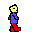
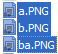
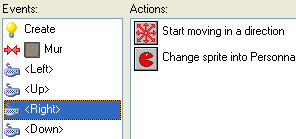
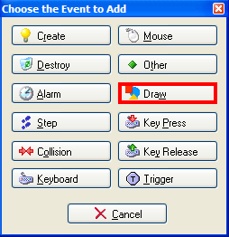
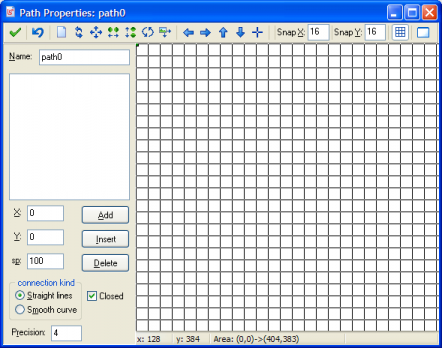
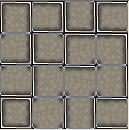

Alors, vous voulez créer vos propres jeux vidéos tout en suivant un tutoriel qui vous permet d'avancer à votre rythme, et qui explique tout en partant de zéro, sans aucune base nécessaire ? Vous êtes tombé sur le bon tutoriel ! :p
Peut-être avez-vous essayé la programmation pour créer vos jeux, mais vous trouviez cela trop difficile ? Peut-être ne savez-vous tout simplement pas par où commencer, et dans ce cas vous vous êtes tourné vers un logiciel qui-fait-tout (enfin, pas tout quand même :D ) ?
Et bien mesdames et messieurs, je vous présente le fabuleux, l'unique Game Maker. C'est un logiciel très performant qui possède une interface très simple, et qui vous permettra, en quelques clics de souris, de créer vos jeux vidéos de la façon la plus facile du monde.
Vous pouvez créer tout ce qui est imaginable : au début, vous n'oserez pas aller trop loin et ferez des petits jeux, tels que des Pacmans, puis progresserez et vous attaquerez à des projets bien plus ambitieux, tels que de longs MMORPG en 3D ! (Bon il y aura du boulot quand même avant d'en arriver là :p ).
Game Maker est donc un logiciel très performant qui permet de créer des jeux très simples comme très élaborés. La toute première version est sortie en 1999, et la version la plus récente est Game Maker 8.0. Il a donc bien évolué ! ^^
Game Maker est un logiciel payant, qui coute 25 euros, mais une version gratuite existe. Elle comporte en contrepartie moins d'options, mais reste tout de même très complète. Il n'y a pas de limite de 15 ou 30 jours comme sur la plupart des logiciels.
Cliquez sur l'image pour l'agrandir
C'est bon, je vous ai bien mis ça dans la tête ? Vous êtes fin prêt ? :pirate: On y va quand vous voulez !
Nous allons commencer ce tutoriel par un chapitre sur l'histoire de Game Maker. En effet, autant connaitre sur quoi on va travailler que de se lancer corps et âme dans quelque chose qui nous est inconnu.
Game Maker est un logiciel qui sert à développer des jeux vidéos, ça veut dire qu'il sert à les créer. Pour votre culture générale, sachez qu'il a été créé par un néerlandais, Mark Overmars. Il a sorti la toute première version de ce logiciel en 1999.
A ce jour, la version actuelle est la version 8.0. Le logiciel a donc bien évolué depuis sa première version. C'est cependant depuis la version 6.0 que Game Maker a commencé à devenir très intéressant, notamment avec la possibilité d'ajouter de la 3D dans ses jeux.
Game Maker a subi de nombreux changements au fil de ses versions. Voici un récapitulatif des changements principaux de chaque version (sources : wikipedia et gamemaker.fr).
Histoire de Game Maker
L'ancêtre de Game Maker est sorti en novembre 1999. Il s'appelait à l'époque Animo. Il n'y a jamais eu de version 1.0, la première étant la 1.1. Dans cette version, les jeux créés devaient alors être lancés depuis Animo car il n'y avait alors pas d'exécutables.
L'apparition des exécutables fut dans la version 1.4, qui proposait également de travailler avec du texte (on ne pouvait utiliser auparavant que des images).
La version 2.0 est sortie en 2000. Cette version utilise alors DirectX au niveau sonore et le moteur graphique est deux fois plus rapide. Il est également possible de tester son jeu dans une fenêtre à part.
En 2001 sort la version 3.0. Toutes les opérations graphiques utilisent désormais DirectX et il est possible d'utiliser le plein-écran, des écrans de chargement, des collisions aux pixel près, et les musiques peuvent désormais être au format mp3.
La version 4.0 devient une véritable barrière avec les version précédentes car les fichiers de cette version sont alors incompatibles avec les version antérieures. L'ensemble du code-source a été complétement réécrit.
En 2003 sort la version 5.0. Game Maker n'est alors plus compatible avec Windows 95. Plus rapide, cette version propose une foule d'améliorations.
Véritable nouveauté, la version 6.0 sortie en 2004 apporte ce que bon nombre de personnes attendaient : un moteur 3D. Le moteur sonore a également été revu et il y a une plus grande finesse graphique. Des fonctionnalités multijoueurs apparaissent aussi dans cette version.
La version 7.0 a été grandement améliorée, notamment au niveau de la 3D. Cependant, la 3D utilisée par Game Maker reste sommaire ; des moteurs 3D plus performants peuvent cependant être utilisés par Game Maker. Je cite par exemple Ultimate 3D. Le moteur 2D est devenu, quant à lui, beaucoup plus rapide qu'avec les versions antécédentes.
La version 8.0, qui est la version actuelle, gère mieux la transparence des sprites (les images utilisées) et gère désormais les .png. Le modèle des collisions a aussi grandement été amélioré. Par ailleurs, le lancement des jeux est plus rapide et Game Maker 8.0 est fourni avec un pack de ressources de haute qualité (images, sons...).
L'interface de Game Maker est très simple d'utilisation, même si elle est en Anglais. Il existe deux modes d'interface dans Game Maker : un mode avancé et un mode simple. Ainsi, il est conseillé aux débutants d'utiliser le mode simple, pendant que les personnes qui ont de l'expérience peuvent régler plus de paramètres dans le mode avancé.
Il est possible, dans la version 8.0, de faire toutes sortes de jeux. Que les graphismes soient en 2D ou en 3D, il est ainsi possible de créer des jeux d'aventure, d'action, de course, ou encore des jeux de plate-forme (avec un petit plombier qui porte une salopette rouge, par exemple :p ).
Il est également possible de programmer dans Game Maker, si les fonctionnalités que vous cherchez ne s'y trouvent pas. Le langage utilisé est le GML, Game Maker Language en abrégé (si vous ne savez pas ce qu'est un langage, je vous invite à rendre une petite visite au cours de M@teo : ici). Il vous permet d'ajouter des scripts dans vos jeux.
Voici des captures d'écrans de jeux qui ont étés créés avec Game Maker :
Super Tank 2, créé par Wargamer
Mario Reloaded, par edi9999
Et puis un jeu en 3D : The Worm Game, créé par Waspwort
Je vous propose aussi cette vidéo, qui est une compilation de plusieurs jeux créés avec Game Maker.
Nous allons durant ce tutoriel dompter Game Maker. Nous allons tout d'abord apprendre à utiliser les fonctions de base : ajouter des objets, des sons, des musiques...
Dans un second temps, nous ferons aussi beaucoup de TP (Travaux Pratiques). Ce sont des exercices que vous ferez seuls, mais que vous serez tout à fait capables d'accomplir. C'est en quelque sorte des exercices pour pratiquer ! :)
Les TP seront bien sûr de difficulté progressive mais tous les éléments vus dans le cours permettront de les accomplir. Nous ferons au début des jeux que vous trouverez totalement nuls basiques, puis nous augmenterons les capacités de vos créations.
Les fonctions 3D et multijoueurs seront élaborées, mais dans une partie réservée à ceux possédant la version complète (payante), vers la fin du tutoriel. Nous verrons par ailleurs un peu de GML (Game Maker Language). Rappelez-vous, c'est le langage de programmation de Game Maker. Nous verrons ainsi comment faire des choses encore plus intéressantes ;) .
Ne vous inquiétez cependant pas, nous le verrons vraiment du tout début-début. Le cours sur cette partie-là sera donc adapté ; nous verrons tout comme si vous n'aviez jamais fait de programmation.
Après une petite séance de papotage, nous allons passer au concret. Nous allons nous acquérir Game Maker, puis nous allons voir à quoi ressemble son interface. Rien de bien méchant. ^^
Je vous ai dit que Game Maker est à la base payant, mais qu'il existait une version gratuite et illimitée, qui possède en contrepartie moins d'options. Comme je ne suis pas là pour vider les portes-monnaie, je vais donc faire ce tutoriel sur la version gratuite.
Commençons donc par télécharger Game Maker 8.0. Rendez-vous pour cela sur le site suivant :
L'installation est toute bête : appuyez bêtement sur Suivant > Suivant > Suivant > Terminer. L'emplacement par défaut est le suivant : C:\Program Files\Game_Maker8
Si vous avez coché la case correspondante durant l'installation, Game Maker 8 devrait se lancer automatiquement une fois l'installation terminée. Si ce n'est pas le cas, rendez-vous dans le dossier mentionné et double-cliquez sur l'icône Game_Maker.exe.
La première fois que vous lancez le logiciel, on devrait vous demander si vous voulez mettre l'interface en mode avancé. Nous avons parlé de cela dans le chapitre d'introduction : le mode simple est plus simple ( :lol: ) tandis que le mode avancé a plus de paramètres, plus de boutons... répondez pour le moment non.
Voila donc ce que vous devriez avoir sous vos yeux ébahis.
Vu que vous ne connaissez pas son interface, nous allons tout voir en détail et tout expliquer. Tout d'abord, il y a la barre des menus tout en haut.
Bon, c'est la même que dans beaucoup d'autres programmes.
Le menu File vous permet créer un nouveau projet (New), d'en ouvrir un (Open), d'en enregistrer un (Save ou Save as) ou encore de quitter Game Maker (Non pas maintenant! ^^ ) Vous pouvez aussi switcher entre le mode simple et le mode avancé.
Le menu Edit sert à créer de nouveaux sprites (images utilisées dans le jeu : fonds, personnages, objets, murs...), à les supprimer, etc. Le menu Resources sert à ajouter de nouveaux sons, de nouvelles pièces, de nouveaux sprites, de nouveaux objets... Le menu Run pour tester votre projet. Le menu Windows sert pour les fenêtres ouvertes, et enfin le menu Help sert pour l'aide, la documentation, des tutoriels en ligne, pour acheter la version complète... :-°
Ensuite, nous avons la barre d'outils, juste en dessous de la barre des menus. Ce sont les fonctions que l'on trouve dans les menus qui sont mises ici avec des icônes pour aller plus vite.
Le premier bouton sert à faire un nouveau projet, le deuxième à ouvrir et le troisième à enregistrer. Le bouton suivant sert à créer un exécutable de votre projet, les deux suivants à tester votre projet (on utilisera la flèche de gauche). Les cinq suivants pour ajouter des ressources à votre projet (sons, images, fonds...), les deux d'après servent à régler les propriétés du projet. Les deux derniers servent à acheter la version complète et à avoir une aide.
Nous avons ensuite la liste des objets qui composent votre projet :
Bon. Comme vous pouvez le voir, il n'y a pour l'instant aucun objet dans notre projet.
Lorsque vous ajouterez des objets, ils se placeront dans les catégories correspondantes. Les sprites, ce ne sont pas des boissons. Ce sont des images quelconques (tout confondu : objets, personnages...) qui composent votre jeu. Les sounds, bah comment dire, c'est, heu... ben des sons :D . Ça peut aussi être les musiques qui seront jouées durant la partie. Les background, ce sont les fonds. Par exemple, ce pourrait être un joli ciel si vous faites un jeu vu de coté (comme Mario) ou encore un sol si vous faites un jeu vu de dessus. Les objects, ce sont tous les objets de votre projet : les pièces à ramasser, votre personnage, les méchants, les murs, les avions... Les rooms, ce sont les pièces. Et oui, les jeux sont faits en pièces. Pour la plupart, il n'y aura qu'une seule pièce, mais vous pouvez en empiler plusieurs pour créer des niveaux successifs. Game information regroupe les informations sur votre jeu. A vous de tout écrire :D . Et enfin, global game settings gère l'ensemble des paramètres de votre jeu.
Et enfin, nous avons le graaaaand carré gris qui est au centre : ben c'est là que nous créerons nos jeux !
Drag and Drop
Je voudrais aussi vous parler de quelque chose de spécial avec Game Maker.
Nous utiliserons beaucoup le drag and drop, ce qui signifie "glisser-déposer". En effet, l'interface de Game Maker est simplifié à ce point : vous prenez certains éléments et les glissez sur l'écran. C'est comme ça que nous ferons la majorité de nos actions, par ailleurs lors des événements.
C'est peut-être un peu tôt pour vous en parler, mais sachez en gros que les événements, c'est tout ce qui se passe durant notre jeu. Que se passe-t-il si on appuie sur la flèche de droite ? Eh bien notre personnage ira vers la droite. Et si on touche une bombe ? Eh bien on perd une vie. C'est ça les événements ^^ .
Et voilà, nous avons tout vu. Comme on le dit toujours, après la théorie la pratique. Nous allons donc apprendre à créer et ouvrir un projet, puis à y ajouter des objets et enfin à le tester.
Nous allons enfin pouvoir passer à la pratique. Nous allons voir comment créer et ouvrir un projet, puis a y ajouter des objets, du son, des décors... Encore une fois, ce n'est pas un chapitre difficile. Il suffit de bien suivre et tout sera bon.
Les jeux que vous créez sont répartis en ce que l'on appelle les projets. Un projet, c'est le regroupement de toutes vos images, de tous vos sons, de toutes vos informations propres à votre jeu. Ainsi, si vous avez fait deux jeux : un Pacman et un Tetris, vous aurez deux projets, un pour chaque jeu.
Les projets, ce sont comme des fichiers. Ils portent une extension. Par exemple, un document de texte porte l'extension .txt. Une image peut porter l'extension .gif, mais encore .jpeg, .tiff, .png selon la qualité de l'image. Les projets Game Maker portent eux aussi des extensions propres à eux : ils portent l'extension .gmk.
Je vous conseille de vous créer un dossier "Projets" dans le dossier de Game Maker. Vous pourrez ainsi y mettre tous vos projets en cours et terminés. Vous saurez ainsi où sont vos projets. Ce que je vous conseille aussi de faire, c'est de créer un nouveau dossier pour chaque projet et de créer de nouveaux dossier distincts pour les images, les sons, les fonds, ...
Par exemple, j'aurai :
Bien sur, ce n'est pas obligatoire de suivre cette technique, mais c'est en tout cas fortement conseillé. Vous ne perdrez ainsi pas vos fichiers et les retrouverez au même endroit. L'organisation est super importante ! ;)
Créer un nouveau projet .gmk
Le titre dit tout, nous allons apprendre à créer un nouveau projet Game Maker. Commencez par ouvrir Game Maker. Jetez alors un œil dans la barre d'outils. Le premier bouton, une feuille blanche, permet de créer un nouveau projet rapidement. Sinon, vous pouvez aller dans le menu File puis cliquer sur New. Encore plus radical, utilisez la combinaison de touches Control + N.
Si vous avez modifié un projet et que vous voulez en créer un nouveau, on vous demandera si vous voulez sauvegarder le projet actuel avant de continuer.
Maintenant que nous avons ajouté un sprite, il faudrait l'utiliser. Pourquoi ne pas utiliser notre tête de mort pour créer un ennemi ? Ce serait alors une sorte de Pacman.
Dans Game Maker, on distingue deux sortes d'images :
Il y a les sprites, qui sont les images confondues. Ce sont en quelques sortes les "modèles". Ils servent à tout, ce sont les images en général de votre jeu.
Et il y a les objets. Ils sont tous uniques et ont comme image un sprite qui leur est attribué. Ainsi, pour créer un objet "ennemi" qui a l'apparence d'un crane, il faut d'abord charger le sprite correspondant et l'attribuer à notre objet "ennemi". Ainsi, on peut réutiliser le même sprite pour plusieurs objets, mais les objets sont quand à eux uniques.
Ajouter un objet à notre jeu
Pour ajouter un objet dans notre jeu, cliquez sur le bouton Create an object de la barre d'outils (boule bleue).
Une nouvelle fenêtre, un peu similaire à celle des sprites, devrait s'ouvrir.
Ne vous occupez que du coté gauche. Les parties events et actions seront vues plus tard. Dans la ligne name, indiquez le nom de l'objet. Mettons par exemple ennemi. En dessous, cliquez sur la petite icone à coté de <no sprite> et choisissez la tête de mort (sprite que nous avons ajouté).
Notre objet a donc comme apparence le sprite que nous avons ajouté auparavant. Cochez alors l'option Solid pour que notre objet soit solide, qu'il soit dur.
Vous pouvez appuyer sur OK.
Nous avons maintenant deux choses dans notre projet : un sprite et un objet. Je suppose que vous commencez à comprendre la différence entre sprite et objet.
Petit exercice pratique : Essayez de créer un sprite "Mur" et de lui donner l'image wall.png contenu dans le dossier tutorial1. Faites alors un objet lui aussi appelé mur qui comportera le sprite correspondant. Cochez cette fois l'option Solid.
Voilà ce que vous devriez avoir dans votre projet :
Revoyez le cours si vous avez du mal, mais cet exercice est tout de même simple.
Les pièces, ce sont les endroits dans lesquels évoluent vos objets. Votre jeu peut en comporter qu'une seule (comme un pacman, où il n'y a qu'une seule pièce avec des murs...) ou plusieurs (une pièce par niveau dans un Mario, par exemple.)
Les pièces peuvent contenir des objets et un fond. Les objets qui se trouvent dans la pièce évoluent d'une manière précise, qui leur est attribuée grâce aux événements. Par exemple, on peut dire à nos murs de ne pas bouger (ce qui semble logique) et à nos personnages de bouger (ce qui semble logique aussi).
Pour créer une pièce, cliquez sur le bouton Create a room de la barre d'outils (le dernier de la série Add a machin). Et voilà la fenêtre qui s'ouvre :
Les pièces sont elles-mêmes divisées en cases qui servent à placer nos objets. Les cases sont toutes de la même taille. Dans la fenêtre qui vient de s'ouvrir, notre pièce est représentée sur la droite : c'est le grand carré gris avec le quadrillage. Le quadrillage représente les case de notre pièce.
Les objets que nous avons ajouté (Mur et Ennemi) ont la même taille : 32x32 pixels. Notre pièce a des cases qui font 16x16 pixels.
Nos objets sont donc deux fois plus grands que les cases de notre pièce. L'idéal serait d'avoir des cases de la même taille que nos objets. Modifiez donc les valeurs X et Y des cases : remplacez 16 par 32.
Vous remarquez que les cases de notre pièce se sont agrandies. Notre quadrillage est désormais de la même taille que nos objets. Nous allons maintenant ajouter nos objets à notre pièce.
Ajout d'objets dans la pièce
Notre objet mur est déjà sélectionné, comme on le voit sur la gauche.
Il vous suffit de cliquer sur votre pièce pour y déposer votre objet.
Faites donc un mur tout autour de notre pièce :
Maintenant, plaçons quelques ennemis sur notre carte. Appuyez pour cela sur le bouton suivant :
Sélectionnez alors l'objet ennemi. Placez-en quelques uns sur votre pièce.
Et voilà, vous avez ajouté des objets à votre pièce !
Allez, je vous avoue que moi aussi je trouve le fond gris super-moche. Pourquoi ne pas en mettre un plus beau (pourquoi s'en priver surtout :p ) ? Pour cela, nous allons tout d'abord devoir l'ajouter à notre projet, de la même manière qu'avec les sprites et les objets.
Fermez la pièce que nous avons créé et cliquez sur le bouton Add a background de la barre d'outils. Mettez comme nom "Fond" par exemple puis cliquez sur Load background. Prenez par exemple Sand.
Maintenant, réouvrez votre pièce. Cliquez sur l'onglet Background.
Cliquez alors sur le bouton suivant :
Choisissez alors votre fond. Et là, votre pièce se colorie avec votre image de fond ! (Ah ça soulage les yeux :D )
Et si nous testions notre projet ?
Allez, pour finir en beauté, testons ce que nous faisons depuis le début (pour que vous soyez sur que je ne vous mène pas en bateau depuis le début :p ). Appuyez pour cela sur Run the Game de la barre d'outils. (Le premier bouton ! Le deuxième sert à autre chose).
Et après un petit chargement...
Quoi, on a fait tout cela pour... ça !? Les crânes ne bougent même pas ! C'est nul !
Hola, avant que vous ne m'étripiez, je voudrais vous dire que vous avez fait le plus gros. C'est en effet déjà pas mal, ce que vous avez fait ! (Surtout que si vous l'aviez programmé, vous y auriez mis plusieurs heures !) Vous avez donc fait en quelques minutes ce qu'en faisant de A à Z vous auriez fait en bien plus de temps. Conclusion, merci qui ? :p
Par ailleurs, le chapitre suivant portera sur les événements (depuis le temps que je vous en parle !). Nous allons enfin pouvoir faire bouger nos objets, et donner à nos jeux l'apparence de jeux.
Pfffiou ! Ce long chapitre est enfin fini. Vous connaissez la base de Game Maker, c'est déjà ça. Nous allons voir dans le chapitre suivant les événements, qui servent à faire bouger nos objets, à faire certaines choses si des conditions sont réunies, etc.
Ah, les évènements, on y est ! Depuis le temps que je vous en parle, vous avez bien fini par vous les mettre dans la tête. Parlons donc concret : les évènements, c'est tout ce qui se passe durant notre jeu. Ce sont toutes les actions. :)
Nous allons donc rendre plus vivants nos programmes : que se passe-t-il lorsque mon objet touche l'autre objet ? Et si le nombre de vies atteint 0 ? C'est à vous de décider de tout cela dans le chapitre suivant ;)
Alors tout d'abord, j'aimerais que l'on soit clair sur ce qu'est un évènement. Un évènement, c'est une action qui est faite lors du déroulement du jeu. Voici des exemples d'évènements :
Lorsque l'on commence la partie, le nombre de vies doit être 3.
Notre personnage, au début de la partie, doit se mettre à bouger.
Si l'objet personnage touche l'objet ennemi, alors on perd une vie.
Si jamais le nombre de vies atteint 0, alors la partie est terminée.
Bien sur, dans un vrai jeu, il y a beaucoup plus d'évènements ! Il y en a pour tout : les collisions (quand deux objets se rencontrent), quand une variable atteint une certaine valeur, si jamais telle condition est accomplie, si jamais machin, etc.
Hep hep hep, c'est quoi une variable ?
Une variable, c'est une donnée qui est stockée dans la RAM, la mémoire vive si vous préférez. Cette mémoire est très rapide et sert à faire des actions très rapidement. Elle se vide intégralement quand l'ordinateur s'éteint, à l'inverse du disque dur. Cette donnée, qui est donc stockée dans la RAM, prend une certaine valeur (par exemple 5). On pourra par la suite modifier cette valeur. Nous aurons par exemple une variable argent qui aura comme valeur 150000 :D . Mais ne nous attardons pas trop là-dessus, nous aurons l'occasion d'y revenir plus tard.
Nous pouvons donc nous occuper de faire avec les événements tout ce qui fera bouger notre jeu. Sans eux, il n'y a rien. Si vous ne mettez pas d'événements dans votre jeu, rien ne se passera et vos objets ne bougeront pas, vu qu'ils n'ont rien à faire (comme nous l'avons si bien vu en testant notre jeu).
Créer des évènements
Il y a vraiment beaucoup d'événements différents dans Game Maker, et je n'aurais pas le temps de toutes les élaborer. Nous verrons que les principaux, mais vous pourrez voir les autres par vous même.
Ouvrez donc le projet que nous avons créé précédemment. Nous avions cela :
Nous allons commencer par créer un événement à nos ennemis.
Sélectionnez donc l'objet Ennemi. Vous remarquez que la même fenêtre qu'auparavant s'ouvre. Nous nous étions jusque là occupé de la partie gauche, mais nous allons désormais utiliser la partie droite (Events et Actions).
Vous remarquez qu'il y a deux colonnes dans cette partie de la fenêtre :
Events : Dans cette colonne, nous allons y mettre nos conditions. Par exemple, "si telle touche du clavier est appuyée" est une condition. "Si le nombre de vie atteint 0" en est une autre.
Actions : Et bien il s'agit de l'action qui sera effectuée si la condition est vraie, si elle est valide.
Nous aurions par exemple (Le texte bleu est la partie Event et le texte rouge la partie Action) : Si l'objet personnage touche l'objet ennemi, alors le nombre de vies doit baisser de 1.
Pour être sur que vous compreniez tout de suite, nous allons voir cela plus concrètement.
Cliquez donc sur le bouton Add Event en bas. Une petite fenêtre s'ouvre alors, vous demandant quel type d'événement vous voulez créer. Il y en a en effet 11 différents :
Create : Lorsque l'objet est créé. Il l'est en principe dès le début du jeu, du moins si on a placé l'objet dans une pièce.
Destroy : Lorsque l'objet est détruit.
Alarm : Ce sont des fonctions de chronomètre. Par exemple, on peut refaire une action toute les dix secondes.
Step : Dès que l'objet se déplace.
Collision : Dès que l'objet en touche un autre.
Keyboard : Gestion du clavier.
Mouse : Idem, mais pour la souris.
Other : Tout le reste :D
Draw : Assez compliqué, on verra plus tard. C'est pour dessiner des formes.
Key press : Si une touche est appuyée.
Key release : Si une touche est relâchée (Oui, il y a deux mouvements quand vous appuyez sur une touche : tout d'abord vous l'enfoncez, puis vous la relâchez).
Voici donc les différents types de conditions possibles.
Nous pourrions faire un événement qui fait que nos ennemis se mettent à bouger au début de la partie.
Pour cela, nous allons choisir un événement de type Create. Ainsi, il sera exécute dès le début de la partie. Vous devriez avoir donc cela dans votre colonne Events :
Rendez vous maintenant dans la colonne Actions. Elle est pour le moment vide, car nous n'avons rien mis. Vous remarquerez sur le coté droit des petites images. Ce sont les différentes actions possibles. Et ce n'est pas tout : vous avez le choix entre 6 onglets différents !
L'action qui fait bouger l'objet se trouve dans l'onglet Move (le premier). Il s'agit du tout premier bouton :
. Vous allez alors prendre l'image, la glisser vers la colonne Actions puis y la déposer.
Viennent alors les réglages de l'action dans la fenêtre suivante. Sélectionnez toutes les flèches de directions, sauf celle du centre. Dans la colonne Speed, entrez la valeur 3. Appuyez ensuite sur OK.
Nous devrions donc avoir cela :
Ce qui pourrait se traduire comme : "Si l'objet est créé, alors aller dans une direction au hasard à une vitesse de 3." Vous comprenez ? ^^ Et c'est là toute la magie de Game Maker : vous pouvez mélanger des tonnes de conditions et actions différentes, pour faire des combinaisons totalement folles ! Libre alors à vous de déchainer votre imagination ! ;)
Et si nous testions notre projet ? J'ai hâte de voir ce qu'on a fait ! :D
Bonne idée, testons notre projet. Faites comme nous l'avons fait auparavant. Et vous vous apercevrez avec stupeur que ça marche ! Les ennemis se mettent à bouger dès le début de la partie dans une direction aléatoire !
Mais c'est nul ! Ils passent à travers les murs et partent !
Oui, car nous n'avons pas encore mis de collisions ;) .
Les collisions
Alors tout d'abord, c'est quoi une collision ? Dans la vie de tous les jours, c'est quand deux choses se rentrent dedans. Ici, c'est pareil : c'est quand un objet en touche un autre. Ici, l'idéal, ça serait que lorsque nos ennemis touchent un mur, ils rebondissent dessus.
Alors c'est parti, créons cet événement :D . Commencez par re-sélectionner notre objet Ennemi. Nous allons alors rajouter un second événement au premier. Créez un événement de type Collision. Un petit menu déroulant s'affiche avec les objets existants.
Nos ennemis doivent rebondir sur les murs, donc choisissez l'objet mur.
Notre événement est donc créé. Il s'ajoute dans la liste Events. Vous pouvez passer d'un événement à l'autre en cliquant dessus.
Dans les différentes actions disponibles, vous allez choisir l'action Bounce (la toute dernière) :
. Glissez-la dans la colonne Actions. Ne vous préoccupez pas des options et appuyez sur OK. Vous pouvez alors re-tester votre projet.
Et là, miracle, ils rebondissent ! :D
Un petit exercice
Maintenant que vous savez comment gérer les collisions, il va falloir vous entrainer un peu. Je vous propose l'exercice suivant :
Il faudrait que les ennemis rebondissent aussi sur leurs congénères, car pour l'instant, ils se passent dessus et ça fait pas très beau. Créez un tel événement. C'est facile, nous venons de le faire avec les murs !
Citation : Correction
Il suffisait en effet de créer un événement Collision, cette fois avec l'objet Ennemi, et d'y mettre l'action Bounce. Rien de très compliqué ^^
Après avoir eu une brève conversation sur les événements (oh oui, croyez-moi vu n'avez encore rien vu !), nous allons voir des choses plus compliquées que l'on peut faire avec les événements : l'utilisation du clavier, du score, de la vie...
Bon, heu, avant qu'on commence, vous savez c'est quoi un clavier ? :euh: Je suppose que oui. Au pire, allez voir ici.
Ce chapitre sera un chapitre-TP. Ce sera en fait un chapitre comme les autres, mais nous faisons un projet en même temps. C'est une sorte de TP avec des aides.
Nous allons commencer par parler du projet que nous voulons obtenir. Il est en effet important de bien réfléchir à ce que nous voulons faire, pour respecter certaines contraintes que l'on s'est fixées.
Le projet que j'aimerais que l'on établisse tout au long de ce chapitre sera un jeu où Bob, un smiley, doit attraper des pièces. Il gagne un point par pièce récupérée. Dès qu'il en attrape une, une autre apparait quelque part d'autre sur la carte. Pendant ce temps, des crânes se baladent sur la carte. Si Bob touche un crâne, il perd une vie. Si il n'a plus de vies, il perd.
Nous avons vu comment faire des événements de base dans le chapitre précédent, je considère donc que vous savez en créer (tout du moins ceux que nous avons vu ;) ). Commençons par créer un nouveau projet.
Nous allons charger les sprites suivants:
Personnage : smile.ico dans le dossier Icons
Mur : wall.png dans le dossier tutorial1
Pièce : coin1.png dans le dossier Maze - Platform
Ennemi : skull.ico dans le dossier Icons
Créez maintenant les objets suivants. N'oubliez pas de charger les sprites correspondants :
Personnage : Cochez la case Solid
Mur : Cochez la case Solid
Pièce : Ne cochez pas la case Solid
Ennemi : Cochez la case Solid
Voilà donc ce que vous devriez avoir :
Chargez aussi un fond, celui que vous voulez :) . Pour ma part, je prends wood.
Désormais, créez une nouvelle pièce, et mettez le quadrillage à 32x32 pixels. Mettez-y le fond, et placez des murs tout autour de la pièce comme nous l'avons fait dans notre projet précédent. Placez ensuite quelques ennemis et le personnage au milieu de la carte, ainsi qu'une pièce quelque part.
Ajout des événements
Maintenant que nous avons préparé le terrain, nous allons pouvoir y mettre nos événements.
Nous allons commencer par créer les événements des crânes. Tout d'abord, créez-leur une collision sur les murs, sur les autres crânes, et sur le joueur : ils doivent rebondir dessus. N'oubliez pas de les faire bouger dès le début de la partie. Mettez-leur la vitesse que vous voulez (1 est lent, 5 est rapide).
Bon, avant d'aller plus loin, j'aimerais vous parler de quelque chose de spécial avec les fonctions de rebonds. L'action Bounce sert principalement pour rebondir contre des objets qui ne bougent pas. Par contre, les choses risques de se gâter lorsque deux objets en mouvement se rencontreront : ils se colleront entre eux !
Le meilleur remède contre cela, c'est de remplacer notre éternelle action Bounce par une action Reverse Horizontal et Reverse Vertical. Vous devriez donc avoir cela :
Faisons désormais les événements de Bob, le smiley. Bob peut aller à gauche, à droite, en haut, et en bas. On le dirige avec les flèches du clavier.
Mais je sais pas faire, moi, avec le clavier :o
Nous allons justement voir comment on l'utilise. Le clavier est traité comme un événement : si la flèche de gauche est appuyée, alors le personnage va à gauche. Si la flèche du haut est appuyée, alors le personnage va vers le haut. C'est comme ça que ça marche.
Ouvrons donc la fenêtre des événements de Bob. Nous voulons qu'au début de la partie Bob reste où il est ; il ne bouge pas. Il ne bougera que si on appuie sur une touche. Nous allons donc créer un événement de type Create. Mettez dans cet événement l'action Mode Fixed
et sélectionnez que le bouton central.
Ainsi, Bob ira "au centre", ou plutôt il restera où il est ^^ .
Mettons désormais les événements du clavier :) . Vous allez créer un événement de type Keyboard. Vous avez alors dans un menu déroulant toutes les touches du clavier standard, classées en catégories. Remarquez les quatre du haut : left, right, up, down qui signifient gauche, droite, haut, et bas. Nous allons devoir créer un événement par direction.
Créons donc un premier événement "Keyboard left". Comme action, mettez un Move Fixed (toujours le même, oui) avec la direction gauche. Mettez comme vitesse 3 par exemple. Créez ensuite un deuxième événement "Keyboard right". Mettez comme action un Move Fixed avec la direction droite. Mettez la même vitesse. Créez deux autres événements tels : un autre pour le haut et un dernier pour le bas.
Expliquons ce que l'on a fait :
Nous avons créé un évènement pour chaque touche du clavier. Comme il y a quatre directions (gauche, droite, haut, bas), nous avons utilisé quatre touches, donc quatre événements. Si on appuie sur la touche gauche, Bob ira vers la gauche à la vitesse 3. Si on appuie sur la touche droite, il ira vers la droite à la vitesse 3. Etc.
Nous avons terminé de nous occuper du clavier. Rajoutez également à Bob une collision pour :
Nous avons terminé de faire cette partie sur le contrôle global du joueur et des ennemis. Nous allons maintenant pouvoir nous occuper du système de points et de vies.
Nous avons dit que lorsque le joueur attrape une pièce, il gagne un point. Alors, une nouvelle pièce apparait quelque part d'autre sur la carte. Il doit aller la récupérer. Si jamais il touche un des crânes qui se baladent sur la carte, il perd une vie. Et si il n'a plus de vies, il a perdu.
Et on peut dire que vous avez de la chance, car il existe des fonctions toutes prêtes qui servent justement au score et aux vies. :p
Allons donc sur notre objet Personnage et allez dans votre événement de type Create (On en a déjà fait un). Allez alors dans l'onglet Score. Prenez l'action Set score et mettez-le dans les actions. Laissez 0 dans la barre de saisie (on commence avec 0 points). Prenez maintenant l'action Set lives et mettez-le aussi dans les actions. Mettez alors 3 pour que le joueur commence avec 3 vies.
Ces deux fonctions ont pour but de directement modifier la valeur des vies et du score : on met le score à 0 et les vies à 3 quand la partie commence. :)
Voilà ce que nous devrions donc avoir :
Allez maintenant dans l'événement Collision avec les Ennemis.. Ajoutez-y un Set lives. Ecrivez -1 comme valeur et cochez la case Relative.
Explications : Si vous entrez une valeur sans cocher Relative, cette valeur remplacera la valeur existante. Si par contre la case Relative est cochée, la valeur entrée sera ajoutée, ou soustraie à la valeur actuelle. Ainsi, le nombre de vies baissera de 1 à chaque fois (d'où le signe "-" devant le 1)
Maintenant, rajoutez un événement de type Collision avec Pièce. Mettez-y comme actions :
Set score. Cochez relative et écrivez 1. (Ainsi on ajoute un aux points du joueur)
Il faudrait aussi que la pièce disparaisse et réapparaisse autre part. Pour cela, utilisez l'action Jump to random de l'onglet Move. Laissez 0 dans chaque barre de saisie. Par contre, tout en haut de la fenêtre, cochez "Other" et non "Self" sinon c'est le personnage qui va partir :p . En faisant ainsi, la pièce sera "téléportée" dans un endroit au hasard de la carte.
Testez votre carte et tentez de ramasser des pièces : ça marche ! :soleil:
Cependant, il manque quelque chose :
On ne voit pas combien de vies il nous reste
Et puis de toutes façons on ne meurt jamais ! :p
Et bien mesdames et messieurs, si on ne meurt jamais, c'est bien parce que l'on ne l'a pas précisé ! On n'a pas encore dit au jeu : "Si le nombre de vies atteint 0, alors perdre !" Alors allons-y, faisons-le. Créez un événement de type Other et sélectionnez dans le menu déroulant No more lives. Allez dans l'onglet Main2 et mettez l'action End game (pour arrêter le jeu). Et pour faire encore plus classe, rajoutez une action Show highscore de l'onglet Score, ce qui a pour but de mettre une table avec les records de scores :soleil: .
Allez, encore un petit truc et c'est fini : on ne voit toujours pas le nombre de vies que l'on a ! Pour ce faire, c'est très simple. Retournez dans l'événement Create et ajoutez-y une action Score caption de l'onglet Score. Vous remarquez que la ligne show score est activée (on voit donc le score) mais pas la ligne show lives. Cliquez sur le petit bouton à coté et choisissez show.
Maintenant, relancez votre projet et regardez tout en haut, sur la barre de titre du jeu :
Bravo, vous avez créé voter premier vrai jeu ! :p Cependant, il y ressemblera encore plus quand nous aurons rajouté une bande sonore ! Qu'en pensez-vous ? Allez, ajoutons du son !
Voici les différents sons que l'on pourrait apporter au jeu :
Une musique de fond
Quand le joueur ramasse une pièce
Quand le joueur touche un ennemi
Quand le joueur rebondit contre un mur
Quand on a perdu
Il va falloir évidemment tout d'abord les ajouter à notre projet. Voilà ceux que je vous propose, mais vous êtes libre de choisir les vôtres. Pour ajouter des sons, utiliser le bouton Create a sound de la barre d'outils.
Musique : music.mid du dossier tutorial1 (Le dossier lui-même dans le dossier des sons)
Quand le joueur ramasse une pièce : win2.wav
Quand il touche un ennemi : miss.wav
Quand il rebondit : close1.wav
Lorsque l'on perd : lose1.wav
Retournez donc sur votre objet Personnage, dans l'événement Create. Ajoutez-y une action Play sound de l'onglet main1. Choisissez votre fond musical parmi les sons de votre projet. Mettez alors true à loop (Pour que le son recommence une fois fini). Allez ensuite dans votre événement Collision avec Ennemi, et mettez le son correspondant avec loop false (Pour que le son ne joue qu'une fois). Rendez-vous ensuite dans votre événement Collision avec Pièce et mettez le son de la pièce. Pas de loop non plus. Faites comme cela dans les événements Collision avec Mur pour le rebond et No more lives pour le son "perdu".
Testez votre projet, et là, tadaaah, y'a du son ! :D
Ca y est, votre premier vrai jeu ! ;) Vous pouvez être fier, même si ce n'est pas encore digne de GTA.
Nous avons vu comment faire des événements plus complexes, comment ajouter un score, des vies, et mettre du son. Que pensez-vous de voir autre chose, maintenant ?
Mais avant tout, pratiquez ! On ne le dit jamais assez : c'est en forgeant que l'on devient forgeron et c'est en... heu... Game Makant qu'on devient un véritable Game Maker ;) :D .
Ce chapitre-là traitera plus en détail les sprites. Vous ne vous y attendiez pas, et pourtant, c'est là un chapitre entier que je leur dédie ! Vous qui pensiez tout savoir dessus, détrompez-vous ;) ... Saviez-vous par exemple que l'on peut créer des animations grâce à plusieurs sprites ? Non ?
Pas grave, puisque de toute façons ce n'est que maintenant que nous voyons tout cela. Allez, courage, et bientôt vous serez un vrai incollable sur le sujet ;) .
Après avoir longuement conversé au sujet des événements, nous allons reparler un petit peu des sprites. Savez-vous tout d'abord ce qu'est une animation ? Une animation, c'est une série d'images, qui lorsqu'on les fait défiler très vite, forment un petit film animé.
Dans Game Maker, et dans beaucoup d'autres logiciels et concepts d'ailleurs, on utilise plusieurs images que l'on fait défiler très vite. Bien sur, dans les courtes animations rudimentaires, peu d'images sont requises. Par contre, dans les longues animations, il faudra beaucoup plus d'images.
Prenons un exemple concret : le vol de la mouche :D . La mouche, quand elle vole, bat les ailes de haut en bas. Voici les images que nous pouvons utiliser pour cela :
|
|
Dans la première image, la mouche a les ailes vers le haut, dans la deuxième elle les a un peu baissées et dans la dernière, elle a les ailes vers le bas. Ainsi, en mettant plusieurs fois ces images à la suite, on obtient une réelle animation :
etc. C'est exactement la même chose lors du mouvement d'un personnage, par exemple. Sauf que le personnage, lui, a des jambes et pas des ailes :lol: . Voici une animation d'un personnage marchant vers la droite (Le premier qui se moque de mes dessins, il sort ! :-° ).

etc.
Chaque image qui compose l'animation est un sprite différent dans Game Maker.
Mais ça veut dire qu'avec une animation de 10 images, j'aurais 10 sprites dans mon projet ! Ça va tout encombrer !
Non car Game Maker permet de charger plusieurs images dans un seul sprite : ainsi, l'image du sprite lui-même sera constitué de plusieurs images animées. On essaie ? (Pour le besoin de ce chapitre vous pouvez créer un personnage sur Paint comme je l'ai fait. Ça m'a pris 5 minutes pour tout vous dire. Attention, faites des images de 32*32 pixels pour que nous travaillions sur le même format. Au pire, copiez-collez mes images, ça sera plus simple :D ).
Ajouter notre animation à notre projet
Ouvrez un nouveau projet et ajoutez un sprite que vous nommerez Personnage_test par exemple. Appuyez ensuite sur "Load Sprite" et sélectionnez toutes les images de votre animation.

Regardez alors sous le bouton "Edit Sprite". Il y a écrit :
La ligne "number of subimages" correspond aux nombres d'images qui composent votre sprite. Il y a écrit 3, donc les trois images ont étés chargées ! Pour vérifier, appuyez sur "Edit Sprite". Vous voyez ainsi les "subimages" de votre sprite. Voilà pour moi :
Vous pouvez appuyer sur OK et fermer la fenêtre du sprite. Créez ensuite un objet Personnage donc le sprite est l'animation chargée. Cochez l'option Solid.
Ajoutez maintenant un sprite de mur (je vous propose wall.png du fichier tutorial1.) Créez l'objet correspondant et cochez l'option Solid.
Créez désormais une pièce avec un quadrillage de 32*32 pixels. Arrangez-la de la sorte :
Testez ensuite votre projet. Votre animation marche, le personnage gigote !
Ouais c'est cool ! Mais par contre, le personnage bouge trop vite ! Il ne se déplace pas pas non plus et y'a un carré blanc tout autour et c'est horrible !
Nous allons régler ces problèmes-là. Nous allons commencer par régler le problème du carré blanc.
Si vous voyez un carré blanc, c'est tout simplement parce qu'il y a du blanc tout autour ! Dans votre image, le contour du personnage est constitué de couleur blanche, qui apparaitra forcément par-dessus un fond gris. Pour régler ce problème, il suffit d'"effacer" ce blanc tout autour. Nous allons donc utiliser un logiciel inclus dans Game Maker : l'éditeur de sprites !
Double-cliquez sur votre sprite Personnage pour ouvrir la fameuse fenêtre. Cliquez alors sur le bouton "Edit sprite". Vous voyez alors l'aperçu de vos images. Nous avons vu cela tout à l'heure. Double-cliquez maintenant sur la première image. Un logiciel un peut comme Paint s'ouvre alors.
Maintenant, allez dans le menu "Image". Descendez jusqu'à "Erase a color" ou appuyez sur Shift + Control + E. Sélectionnez la couleur blanche (par défaut) ou prenez votre couleur de fond si elle n'est pas blanche (certaines personnes colorient le fond de leurs sprites en violet par exemple). Laissez la barre "tolerance" à 0. Appuyez alors sur OK. Votre couleur blanche devient transparente. En gros, tout ce qui est blanc sur le dessin sera "découpé", sera rendu invisible.
->
Répétez alors l'opération pour chaque image que constituent votre animation.
Vos images sont désormais transparentes ! Pour être sur que la modification soit prise en compte, rechargez vos sprites dans vos objets. Une fois fait, relancez le projet. Résultat, plus d'immonde carré blanc :
Maintenant que ce problème graphique est résolu, nous allons pouvoir nous occuper du gros : faire bouger le personnage ! Cependant, avant de faire cela, il faudra posséder deux animations et non une. Notre personnage bouge, certes, mais vers la droite ! Si nous voulons qu'il puisse se diriger vers la gauche, il faudra qu'il se tourne vers la gauche.
Quoi, il va falloir refaire toutes les images à l'envers !? :colere:
Mais non, puisque une fois de plus Game Maker est génial : il a tout prévu ;) Renommez le sprite du personnage en Personnage Droite et créez-en un nouveau Personnage_gauche. Rechargez les mêmes images.
Notre personnage regarde toujours vers la droite me direz-vous, mais double-cliquez sur Personnage Gauche et réouvrez le logiciel de tout à l'heure.
Allez dans le menu "Transform" et cliquez sur l'option "Miror/Flip" (ou appuyez sur Control + Alt + M). Laissez les paramètres et appuyez sur OK. Votre image est inversées horizontalement.
->
Faites ainsi pour chaque image de Personnage Gauche.
Voilà donc ce que vous devriez avoir:
Nous allons désormais pouvoir placer les événements.
Les événements
L'idée générale est la suivante : lorsque l'on appuie sur la Flèche de gauche, le bonhomme marche vers la gauche, tandis que si l'on appuie sur la Flèche de droite, il se dirige vers la droite. Il va donc falloir créer un événement Keyboard pour la flèche gauche et un autre pour la flèche droite. On y va ?
Nous allons commencer par nous occuper de la direction vers la droite. Ouvrez donc l'objet Personnage. Ajoutez un événement Keyboard Right. Mettez une action Move fixed qui va vers la droite avec une vitesse de 3. Ça, nous connaissons. Nous allons ajouter une seconde action que vous ne connaissez pas : Change sprite qui se trouve dans l'onglet main1. Choisissez dans le menu déroulant Personnage droite (puisque c'est vers la droite) et mettez -1 en subimage.
Ajoutez un second événement Keyboard Left et mettez les mêmes actions, mais réglées vers la gauche. Ainsi, dans Move fixed, vous sélectionnerez la flèche gauche et dans Change sprite, vous choisirez Personnage Gauche.
Évidemment, n'oubliez pas de mettre une collision avec le mur. Mettez-y comme action un Move fixed, direction centrale à la vitesse 0.
Récapitulation
Voici donc ce que vous devriez avoir dans chaque événement :
Événement "Keyboard Left"
Évènement "Keyboard Right"
Et bien sur l'événement "Collision mur"
Testons !
Ça y est, nous avons réussi à créer notre bonhomme qui se déplace ! Quand on appuie sur les flèches, il va vers la gauche ou la droite. C'est génial ! :D
Ne dirait-on pas un début de Mario ? Vous avez la base, rajoutez des pièces et un compteur de points qui incrémente à chaque pièce ramassée :) . Bref, améliorez et améliorez pour vous entrainer !
Bon allez, comme je suis de bonne humeur, je vous donne un screen de ce que j'ai chez moi :
Voici une liste des choses que nous pouvons améliorer :
Changer de fond : En effet, le fond gris, c'est plutôt bof.
Ajouter de la fluidité dans le mouvement : Le personnage semble se précipiter entre ses mouvements de jambes. On pourrait rajouter des images pour plus de fluidité.
Réduire la vitesse de mouvement : Les jambes du personnage font un marathon ou quoi !? Il court très vite et pourtant n'avance quasiment pas, il faudrait changer cela !
Le personnage pourrait nous regarder : Lorsque l'on commence, il faudrait que le personnage soit orienté vers nous. De plus, quand il se prend un mur, il marche bêtement vers ce mur. Il devrait s'arrêter et nous regarder de nouveau.
Changer de fond
Nous allons pour cela voir deux techniques : Ajouter une couleur unie, et ajouter une image par-dessus, mais qui reste tout de même un fond.
Ajouter une couleur unie
C'est ce qu'il y a de plus simple : ouvrez votre pièce et allez dans l'onglet Backgrounds. Cliquez sur le carré gris de Color et mettez autre chose, comme une couleur bleu ciel.
Ajouter une image par-dessus
Ce que nous pourrions ajouter comme image, ce serait des montagnes. Cliquez sur Create a background de la barre d'outils et chargez l'image mountains.png. Dans la fenêtre de la pièce, allez voir l'option "Foreground image". Choisissez alors vos montagnes.
Heu... elles sont bizarres tes montagnes !
Si il y a deux rangées de montagnes, c'est parce que l'image se répète horizontalement ET verticalement. Décochez alors Tile Vert pour que l'image ne se répète que horizontalement. Ensuite, dans la même option, entrez une valeur telle que la montagne soit à la limite du sol, comme ceci ^^ :
C'est sur que ça pête, hein ? ;)
Ajouter plus de fluidité dans le mouvement
Pour rendre plus réaliste le mouvement de notre personnage, le mieux serait de mieux décomposer son mouvement, qu'on ait vraiment l'impression qu'il bouge les jambes. Nous allons pour cela ajouter une image à son animation. Ouvrez la fenêtre du personnage (gauche ou droite, à vous de choisir, de toute façons vous aurez aussi l'autre à faire alors...) et réarangez les images dans cet ordre-là :
Explications : il faut qu'entre chaque "coup de jambe" il repose sa jambe au centre. Ça ferait en gros:
Jambe droite -> Les jambes au centre -> Jambe gauche -> Jambes au centre -> Jambe droite... Testez, vous verrez : il y a plus de fluidité dans le mouvement.
Réduire la vitesse de mouvement
Les jambes de notre bonhomme semblent être alimentés en 1600Volts, et ça fait vraiment pas beau :o . Si nous réduisons la vitesse de ses jambes (parce qu'en plus il va pas très vite, et si on n'avance pas très rapidement alors que les jambes elles bougent très vite c'est qu'il y a un problème...), il semblera aller à la bonne vitesse et ce sera donc bien meilleur :) .
Ouvrez donc la fenêtre de notre personnage et allez voir dans les événements Keyboard que nous avons créé, plus précisément dans les action Change sprite. Dans la ligne Speed, entrez une valeur bien inférieur à 1. Je trouve que 0.25 est parfait. Cette valeur, vous l'avez compris, change la vitesse de transition entre les images de l'animation.
Testez, et magie notre personnage va à la bonne vitesse ! (Ou plutôt il s'est calmé niveau jambes... :-° )
Nouvelle orientation du personnage
C'est bien sur le plus long à faire, mais aussi et surtout le plus intéressant ! Répétons ce que nous voudrons avoir (très important, je vous rappelle, de fixer ce que nous voulons créer pour que ce soit le plus précis possible) :
Quand on commence la partie, le bonhomme regarde vers la droite (ou la gauche). Ce serait mieux si il nous regardait nous.
Quand le personnage se mange un mur, il reste planté devant comme un débile et marche frénétiquement dans le vide. Une fois de plus, si à la place de se comporter ainsi il nous regardait, ça ferait bien mieux !
Et pourquoi pas, lors de son déplacement, si on appuie sur bas ou haut, il s'arrêterait et nous regarderait.
Allez courage, c'est pas dur ! :p Tout d'abord, ce qu'il faudra évidemment faire, c'est dessiner notre personnage de face. Voilà pour moi :
Nous allons donc ajouter notre sprite à notre projet.
Retournez alors dans votre objet Personnage et créez un événement de type Create. Mettez un Move fixed, direction centrale et vitesse 0, ainsi qu'un Change sprite et sélectionnez votre personnage vu de face (laissez subimage et speed à 0).
Allez maintenant voir votre événement Collision avec mur et mettez-y le même Change sprite (personnage vu de face, subimage et speed à 0).
Avec les touches bas et haut
Autre amélioration que j'avais proposé, ce que quand on appuie sur haut ou bas pendant le déplacement, le personnage s'arrête et nous regarde.
Cette fois, vous le faites tout seuls, c'est assez facile à faire !
...
Voilà la correction (pas tricher ! :diable: )

Un bug assez courant...
J'ai remarqué que la plupart du temps, lorsque l'on fonçait dans un mur, le personnage restait alors bloqué. Ajoutez donc à l'événement Collision avec mur l'action Move to contact (premier onglet, tout en bas). Mettez comme paramètres ceci :
Le bug est donc parti, et on peut repartir d'un mur tranquillement.
La version finale
Voilà, vous avez créé votre premier jeu qui comporte une animation ! Autant dire que nous sommes passés au stade supérieur... je vous dit tout d'abord bravo ! ;) Voilà un screen final :
Votre première animation, vous pouvez être fier ! Nous avons commencé par une version où le bonhomme faisait du surplace avec un immonde carré blanc autour de lui, puis nous avons fait en sorte qu'il aille à gauche et à droite, puis avons rajouté un fond, modifié sa vitesse et enfin lui avons rajouté une dernière direction. Autant dire qu'on a fait du beau boulot ! :D
Voilà, j'ai décidé d'enchainer avec votre premier vrai TP (Travaux Pratiques). Il s'agit d'un exercice à faire tout seul, avec juste quelques indications au début du chapitre. Le but des TP est bien sur de vous montrer que vous êtes capable d'utiliser ce dont vous avez appris (comme on le dit, après la théorie, la pratique).
Nous ferons par contre ce TP ensemble, car il y a plein de choses que nous avons pas vu et qui sont indispensables. Il est bien évident que vous avez les capacités à la faire et que tout ce dont vous aurez besoin aura été vu dans le cours ;) . Libre choix par contre de l'accomplir seul si vous le désirez.
Ce jeu est, en plus, très facile à faire. Nous avons tout vu pour le faire. C'est pour cela que j'ai choisi d'en faire notre premier TP. Nous verrons bien évidemment les choses dont nous aurons besoin, tels que des Actions qui vous sont encore inconnues :)
Voici donc ce que je voudrais que vous fassiez tout au long de ce TP : un casse-brique. :) C'est un jeu assez basique, mais qui a fait son apparition avec les premières machines, dans les temps de Pacman, Tetris...
Voilà ce que nous devons obtenir :
Il y a une salle avec des "briques" en-haut. En bas, il y a une barre que l'on peut déplacer de gauche à droite et une balle qui rebondit dans la salle. Le but est de faire rebondir la balle sur la barre pour la faire envoyer sur les briques en haut et les casser. Quand toutes les briques ont étés cassées, on passe au niveau suivant où il y a plus de briques à casser.
Bien sur, plus on avance dans les niveaux, plus les briques sont nombreuses...
Les objets dont nous aurons besoin
Nos pièces seront découpées dans des carrés de 22*22 pixels. Faites de même, ainsi vous n'aurez qu'à copier-coller mes sprites et les coller dans des fichiers de même taille. Créez donc des fichiers de même taille que les sprites que j'utilise:
Brique bleue : C'est les briques de base. Elles rapportent un point par brique cassée. La balle doit rebondir sur les murs pour toucher les briques. (Taille : 44*22 pixels)
Brique rouge : Idem que les briques bleues, sauf qu'il n'y en a très peu par niveau, et pour cause. Elles rapportent dix points et une vie supplémentaire. (Taille 44*22 pixels)Brique rouge : Idem que les briques bleues, sauf qu'il n'y en a très peu par niveau, et pour cause. Elles rapportent dix points et une vie supplémentaire. (Taille 44*22 pixels)
Murs : Ils entourent la pièce pour faire rebondir la balle, sauf en bas pour laisser passer la balle (le but est justement de l'en empêcher avec la barre !). Notez que j'utilise quatre sprites et non un : il y a un mur horizontal, un vertical, un qui fait le coin gauche et un pour le coin droit. Voici la totalité des sprites :
(Taille 22*22 pixels)
Balle : C'est elle qui faut faire rebondir avec la barre et qui doit toucher les briques pour les casser. Si elle tombe (donc que vous ne l'avez pas arrêté avec la barre), on perd une vie. (Taille 22*22 pixels)
Barre : C'est cette barre qui doit faire rebondir la balle et l'empêcher de tomber. On la contrôle avec les touches gauche et droit. (Taille 88*11 pixels)
Vous remarquez que la taille des sprites est multiple de 22. Créez donc ensuite les sprites correspondant dans votre projet ainsi :
L'engrenage du jeu
Voici comment fonctionne une partie :
Au début, la barre est au milieu de la pièce et la balle sur la barre. Tout de suite, la balle part en diagonale gauche ou diagonale droite (hasard) et va rebondir sur les murs.
Si elle touche une brique bleue, la brique disparait, la balle rebondit et on gagne un point.
Si on touche une brique rouge, la brique disparait, la balle rebondit et on gagne 10 points ainsi qu'une vie supplémentaire.
La balle, a force de rebondir, repartira vers le bas. Il faut alors bouger la barre avec les touches gauche et droite de façon à faire rebondir la balle avec. Ainsi, la balle repart pour toucher d'autres briques.
Si jamais on a pas réussi à ratrapper la balle et qu'elle tombe, on perd une vie.
En plus de cela, la barre et la balle reviennent au centre et la balle repart. Très important : la barre doit s'arrêter (car si la barre bougeait quand la balle tombait, la barre bougera toujours quand on recommencera). Les briques qui ont étés cassées ne reviennent pas. Ainsi, rien ne change mais seules la barre et la balle reviennent au centre.
Si jamais on n'a plus de vies, on affiche un message "Perdu" et on met une table des scores. On relance le jeu ensuite.
Les actions que vous ne connaissez pas
Bien sur, à partir de maintenant, vous pouvez vous lancer seul. Cependant, je vous conseille de lire cette partie pour ainsi connaitre les actions que vous ne connaissez pas. C'est bien sur très bien de chercher soi-même les actions à utiliser (même moi je le fais !), mais c'est toujours évidemment mieux de savoir où mettre ses pieds.
Ce qu'on ne sait pas faire :
On ne sait pas mettre du hasard. Au début, il faut en effet que la balle parte ou vers la gauche ou vers la droite. Il faudra donc du hasard.
On ne sais pas faire disparaitre les objets, mais ça reste simple.
On ne sais pas comment faire pour voir si un objet est sorti de la pièce ou non. (Si la balle tombe et qu'on ne la pas rattrapée avec la barre, c'est qu'elle est sortie).
On ne sais pas comment un objet peut revenir à son point de départ.
On ne sais pas afficher de messages.
Le hasard
Le hasard, c'est simple, ça marche comme un dé. Il s'agit de l'action Test chance de l'onglet Control. Vous mettez le nombre de faces du dé. Par exemple, si on met 5, il y aura une chance sur cinq que la suite se réalise. Facile. Notez que vous pouvez aussi cocher les deux directions d'un Move Fixed, mais je veux que vous vous entrainiez.
Faire disparaitre les objets
Quand notre balle touche une brique, il faut que la brique disparaisse. Utilisez pour cela l'action Destroy instance de l'onglet Main1. Attention, cochez l'option "other" sinon c'est la balle qui disparaitra ;) .
Si un objet est sorti de la pièce
Très facile, mettez un événement de type Other => Outside room.
Faire revenir un objet à son point de départ
Quand la balle tombe, la barre et la balle reviennent à leur point de départ (leur point de création). Utilisez pour cela l'action Jump to start de l'onglet Move. N'oubliez pas de cocher l'option "other" et de choisir les objets à faire revenir.
Afficher des messages
Afficher des messages, c'est facile, il faut juste utiliser l'action Display message de l'onglet Main2. Entrez alors votre message. Vous pouvez en mettre un au début qui explique les règles et les touches et un qui dit "Perdu" quand on n'a plus de vies.
Les blocs
Ça, vous ne connaissez pas. Si vous voulez exécuter plusieurs actions en même temps si une condition est remplie, il faut les regrouper dans ce qu'on appelle un "bloc". Utilisez pour cela les action Start block et End block de l'onglet Control.
Hop, feuille blanche, et c'est parti ! ^^ Bon alors là vous avez deux choix : soit vous vous lancez corps et âme, et c'est très bien, soit vous faites ce jeu en même temps que moi. C'est à vous de décider ce que vous voulez faire, et je ne vous en voudrais pas si vous choisissez de le faire avec la solution (et je vous comprends).
Mais essayez tout de même de le faire seul, au moins vous serez fier de vous :) . La suite est cachée pour ne pas gâcher le plaisir de ceux qui le font seul. Si vous ne voulez vraiment pas le faire seul, vous pouvez lire ^^ .
Nous allons tout d'abord créer tous les objets dont nous aurons besoin, à savoir 8 :
Tous les objets doivent êtres solides. N'oubliez pas évidemment la transparence pour la balle.
Les événements
La barre
Tout d'abord, occupons-nous de la barre. Quand on la crée, il faut s'assurer qu'elle reste où elle est (un Move fixed, direction centrale suffira).
Ensuite, il faudrait que quand on appuie sur gauche ou droite, elle aille dans la direction correspondante. C'est facile à faire (événement Keyboard right/left avec un Move fixed vers la gauche ou la droite.) Je trouve que la vitesse 6.7 est pas mal. Et bien sur, une collision avec Mur vertical (il ne peut que rentrer dans un mur vertical). On a fait ça avec le bonhomme qui bouge, c'est facile.
Ce qui serait bien aussi, c'est que quand on appuie sur haut ou bas, la barre s'arrête. Je me suis en effet rendu compte que c'est très important.
La balle
Qu'on se le dise, 90% du jeu se passera dans l'objet Balle.
Déjà, créons un événement Create. Il faut que lorsque l'on commence, la balle parte d'un coté ou de l'autre. Bien entendu on aurait pu tout simplement cocher deux directions d'un Move Fixed, mais je voulais vous faire bosser l'aléatoire ^^ . Utilisons donc l'action Test Chance. Mettez donc la direction haut gauche avec une vitesse de 8. Mettez ensuite l'action "else" qui se traduit par "sinon" et mettez la direction opposée à la même vitesse.
Mettons ensuite une collision avec la barre. Mettez une simple action "Bounce" pour qu'elle rebondisse dessus.
Vient alors la collision avec les murs. Cette fois, il faudra mettre une collision pour tous les types de murs existants. Encore une fois, de simples "Bounce" suffisent.
La collision avec les briques est la collision la plus intéressante. Commencez par mettre un "bounce" pour être sur que la balle rebondisse. Mettez alors une action "Destroy Instance" avec comme option "other" pour que ce soit bien la brique qui disparaisse. N'oubliez pas de mettre une action "Set score" avec "1" comme valeur (et relative coché pour ajouter au nombre actuel).
Faites de même avec la brique rouge, sauf que vous augmenterez de 10 points et non 1 et que l'on gagne une vie en même temps : c'est l'action Set lives qui doit être utilisée, avec la valeur 1 et l'option relative cochée.
Maintenant, mettez un événement "Outside room" (Other) et mettez-y comme action un Set Lives relative -1. Mettez-y aussi la fameuse action "Jump to start". Mettez-en deux exemplaires, un pour la barre et un pour la balle (n'oubliez pas de cocher "other" et de sélectionner la barre). Pas besoin de mettre "other" et "Balle" pour l'autre, vu que c'est déjà l'objet Balle. Il suffit de garder "self".
Et pour être sur que la barre ne bouge pas, ajoutez un Move fixed comme on les aime ^^ .
Créez enfin un événement Step : Il se ferra à chaque fois que la balle se déplacera (même d'un pixel !). Mettez-y comme action un "Test lives" et remplissez les options comme suit : égal à 0. Ensuite, très important, utilisez des actions "Start block" et "End block" de l'onglet Control. Ainsi, tout ce qui est dedans sera exécuté si l'action juste avant est valide (ici, si le nombre de vies est 0).
Mettez donc dans ce bloc un message qui dit "Perdu" grâce à l'action Display message, un Show the highscore table et un Restart the Game.
L'objet "A"
L'objet "A" ?? :o Mais qu'est-ce que c'est ?
Il s'agit d'un objet dit "fantôme". Il ne se voit pas dans le jeu, il est donc invisible, mais sert à faire des choses de précises, comme mettre le score à 0 au début de la partie, par exemple. Notez qu'un tel objet s'appelle un contrôleur.
Créez donc un objet sans sprite que vous appellerez comme vous voulez (j'ai choisi A car c'est facile à retenir). Lors de sa création, décochez l'option Visible pour être sur de ne pas le voir dans la partie.
Nous l'utiliserons pour mettre les vies à 3 au début, à mettre le score à 0 également, ainsi qu'à mettre l'action Score caption pour rendre visible ou non le score, les vies en haut.
La pièce
La pièce, ben ça sera notre niveau. Rappelez-vous, notre projet est globalement multiple de 22, notre pièce doit donc l'être aussi. Pour savoir quelle taille doit faire la pièce en pixels, il y a juste un simple calcul à faire : nombre de cases en largeur * 22 et nombre de cases en hauteur * 22. Ainsi, pour 29 cases de haut et 22 cases de large, on aura donc 638*484 pixels.
Pour changer la taille de la pièce, rendez-vous dans l'onglet Settings et changez les valeurs Width et Height. Tapissez alors la pièce comme vous le voulez, avec la disposition des briques de votre choix.
La touche finale
Allez, il ne reste plus qu'une chose : tester si il reste encore des briques sur le terrain ! En effet, tant qu'il reste des briques sur le terrain, on continue. Dès qu'il y en a plus, on arrête. Pour cela, il faut utiliser l'action Test Instance count de l'onglet Control. Mettez cette action dans l'événement Step de la balle.
Mettez comme options : "si le nombre d'objets briques est égal à 0" suivi d'un bloc, comme nous l'avons vu. Mettez dedans un message comme "Bravo, vous avez terminé le Casse-Brique !", suivi d'une table des scores et d'un Restart Game.
Voici donc la solution telle que je la propose. Si vous avez décidé de vous lancer seul mais que vous n'avez pas fait la même chose que moi, c'est tout de même très bien : mon code n'est pas le code parfait ! :D
Il y a bien sur des tonnes d'améliorations à faire.
Nous pourrions rajouter d'autres types de briques : des briques qui bougent, des briques qui font perdre des vies, des briques qui font recommencer le niveau, d'autres qui font perdre des points ou encore qui inversent les touches (gauche pour faire aller la barre à droite...)
Dans les améliorations mineures, un fond ne serait pas de refus.
Pourquoi pas deux balles à contrôler ? Le jeu deviendrait alors plus dur !
Un message au début qui explique les règles et les touches
Et le plus intéressant, une véritable aventure ! On pourrait créer plusieurs niveaux à la suite (plusieurs pièces) et rendre la difficulté croissante.
Bien entendu, du son ! :)
A vous de chercher, il y en a surement plein d'autres !
Cette fois, c'est à vous de le faire tout seul, je ne vais pas non plus tout vous pondre tout fait ! :D Je veux bien par contre vous montrer comment coller plusieurs pièces entre elles car on n'a pas vu comment le faire.
Coller des pièces entre elles
Commençons par créer deux pièces. Le but est de passer de la première à la deuxième, et il existe pour cela une action qui s'appelle Next room. Elle se trouve dans l'onglet Main1.
Ici, la condition pour passer dans la seconde pièce, c'est qu'il n'y ait plus de briques dans le niveau (on ne se contentera que de briques bleues, les autres étant des briques bonus si le joueur les rate c'est tant pis pour lui :diable: ). Le plus simple pour vérifier que toutes les briques aient étés détruites ou pas, c'est de le vérifier en permanence. Un événement Step fera l'affaire, car il sera vérifié à chaque déplacement de la balle.
Allez donc dans notre événement Step de la balle et enlevez ce qu'il y avait dans le bloc de "Test Instance count". C'est dans ce bloc que nous mettrons tout cela. Il faut avant vérifier qu'il y ait une autre pièce après, car si il n'y en a plus, c'est qu'on était sur la dernière et on a donc gagné. Mettez donc l'action Check next pour vérifier cela, suivi d'un bloc.
Dans ce bloc, mettez la fameuse action Next room. Sortez du bloc et placez un Else (qui signifie SINON, je vous rappelle : SI il y a une pièce après, alors y aller. SINON...)
Après ce sinon, mettez dans un bloc tout ce donc nous aurons besoin : un message "Gagné !", une table des scores et un Restart Game.
Résumé
Voici donc ce que fait cette série d'actions:
SI le nombre de briques est égal à zéro ALORS
SI il y a une pièce après
ALORS y aller
SINON (Si il n'y en a pas)
ALORS afficher un message, mettre les scores et recommencer le jeu
Il ne vous reste plus qu'à créer ces niveaux, en mettant les briques spéciales plutôt vers la fin. Vous avez fait votre premier jeu qui comporte une véritable aventure !
Ce TP s'achève sur ces quelques mots. Si vous avez décidé de le faire seul, mais qu'en plus il marche, je vous dis chapeau bas ! :p Si vous avez préféré suivre avec moi, c'est bien quand même, mais bon.
Le mieux, pour vous entrainer encore et encore, c'est d'améliorer ce projet : il y a une liste d'améliorations à la fin, essayez de les faire et d'en trouver d'autres ! Modifiez au début un petit peu, puis de plus en plus jusqu'à vraiment être à l'aise. :)
Les variables, quel monde fantastique ! Si Game Maker a bien un réel rapport avec la programmation, c'est grâce aux variables; on les retrouve de partout ! Mais qu'est-ce qu'une variable, au juste ?
Une variable, en informatique, c'est une donnée qui est stockée dans la mémoire vive de votre ordinateur. Une valeur est attribuée à cette variable, donc un nombre, une donnée. Cette donnée peut être par exemple 7, 5221, ou encore -15313. Quasiment tout dans un jeu passe par les variables, car c'est un des meilleurs moyens de stocker des informations rapidement.
Nous aurions par exemple une variable nombre de vies qui aura comme valeur 3. Dans la suite du jeu, il y a un risque que ce nombre diminue. Par exemple, si le joueur se prend un coup, la variable aura ensuite comme valeur 2, puis 1 si il s'en prend un autre... Si la variable a comme valeur 0, alors le joueur a perdu.
Voici un autre exemple pour bien comprendre : on a par exemple une variable nombre de munitions. Disons qu'elle vaut au début 30. Si le joueur tire avec son arme, la valeur baisse (car on a utilisé une munition) et vaudra ensuite 29. Si il tire de nouveau, elle vaudra alors 28, etc. Quand la variable vaudra 0, c'est donc qu'il n'y a plus de balles, on ne peut plus tirer.
Vous commencez a avoir une idée plus ou moins concrète de ce qu'est une variable. Si vous n'avez pas compris ce que c'est, ce qui est normal, vous comprendrez tout du moins par la suite, lors des mises en pratiques qui suivront.
Une variable doit tout d'abord être créée pour être utilisée : l'ordinateur va aller chercher l'espace nécessaire dans la mémoire (ne vous inquiétez pas, il y en a beaucoup dans les ordinateurs ^^ ) et y mettre sa variable. On appelle cela la déclaration de la variable.
Généralement, on donne une valeur à notre variable dès sa déclaration, pour être sur qu'elle ait bien sa valeur à elle : on appelle cela l'initialisation (on donne une valeur initiale).
Plus tard, l'ordinateur pourra retourner voir sa variable dans la mémoire vive et la modifier, lui changer sa valeur.
Mais pour stocker des nombres dans la mémoire, ça doit être super dur !
Heureusement non :) ! Game Maker, en son ultime simplicité, a en effet une fois de plus tout prévu. Vous pouvez déclarer, modifier, tester la valeur de vos variables en quelques clics de souris !
Le long de ce chapitre, nous allons créer non pas un jeu, mais un petit programme. Il ne sera pas vraiment utile, mais ça sera votre premier vrai programme (et non un jeu). Le but est de vous faire comprendre l'utilité des variables, évidemment, mais aussi de vous montrer qu'il est possible de faire autre chose que des jeux avec Game Maker.
Le programme que nous allons faire est extrêmement simple : il y a une fenêtre et un compteur en haut, initialisé à 0. A chaque fois que l'utilisateur bouge la molette de la souris vers le haut, le compteur augmente de 1. S'il bouge la molette vers le bas, le compteur est réduit de 1. Attention, le compteur ne pourra pas descendre en dessous de 0 !
Les variables propres à Game Maker
Game Maker utilise en plus des variables qui sont propres à lui-même, pour justement nous faciliter la vie. Ce sont des variables qui sont remplacées par les paramètres propres au jeu. Ainsi, en tapant par exemple Hauteur de la fenêtre, cette variable sera remplacée par la hauteur de la fenêtre (640 par exemple). Ce sont donc des valeurs qui correspondent à des choses bien précises de notre projet.
Des variables comme ceci, il y en a énormément, et même dans ce cours nous ne les verrons pas toutes tellement il y en a. Nous les utiliserons aussi beaucoup quand nous ferons du GML, langage de programmation de Game Maker ;) .
Ces variables-là, elles sont pour la plupart propres aux objets auxquelles elles appartiennent : sa position, sa vitesse...
Il y a autre chose que vous devez connaitre : les booléens. Il s'agit d'une valeur qui dit si c'est vrai ou faux. Comme on ne peut que stocker des nombres, on dit que 1 représente vrai et 0 représente faux. Exemple : "vivant = 1" => Vivant est vrai, donc le joueur est encore en vie.
Voici des exemples de valeurs propres à Game Maker qui vous seront utiles tôt ou tard :
x : Les coordonnées x de l'objet : sa position horizontale.
y : Les coordonnées y de l'objet, sa position verticale.
visible : Il s'agit d'un booléen. Si sa valeur est 1, alors l'objet est visible. Si c'est 0, il n'est pas visible.
solid : Il s'agit aussi d'un booléen, décidant cette fois si l'objet est solide. 1 si il est solide, et 0 s'il ne l'est pas.
score : Il s'agit du score actuel.
lives : Il s'agit du nombre de vies actuel.
room_width : La largeur de la pièce en pixels.
room_height : Idem, pour la hauteur, toujours en pixels.
L'intérêt d'avoir de telles valeurs est multiple : si par exemple vous avez besoin d'une variable qui stocke la hauteur de la fenêtre, pas besoin d'aller voir dans les paramètres et de taper manuellement ceci : Hauteur de la fenêtre = 640
A la place, il vous suffira d'écrire cela : Hauteur de la fenêtre = room_height
Vous pouvez même faire encore plus fort. Vous pouvez directement modifier une valeur, tel que le score par exemple : score = score + 2 : on ajoute 2 au score score = score * 2 : on double le score score = score + (score/3) : on ajoute un tiers du score.
Sachez que vous pouvez utiliser ces raccourcis dans à peu près tout : dans une action qui change le score, par exemple, au lieu de mettre +1, vous pouvez mettre :
Pour résumer
Ça fait un gros morceau, je pense qu'il serait bon de resumer ce qu'on a vu avant de continuer.
Il y a donc des variables qui ont des valeurs. Ces valeurs peuvent ou être des chiffres, ou des valeurs spéciales pour aller plus vite (mais ça revient à stocker des chiffres ^^ ). Par exemple :
On peut faire une variable simple : nombre de cheveux = 15000
Une autre variable, avec une valeur différente : nuages dans le ciel = 3 * 15
Encore une autre, cette fois en utilisant un raccourci : position texte = room_height - 25
Créer ses propres variables
C'est, je crois, ce que vous attendez depuis le début : créer notre propre variable ! :D
Commençons par créer un nouveau projet. Créez alors un sprite invisible qui fait la même taille que la fenêtre (regardez en haut de la fenêtre "Edit sprite" pour créer une image. Agrandissez-la alors grâce à l'éditeur de sprite.). Créez ensuite un objet invisible qui aura comme sprite celui que vous avez créé (pour qu'il ait la taille de la fenêtre).
Maintenant, allez dans l'onglet Control. Il y a tout en bas les deux actions qui vont nous être importantes :
. Il s'agit de Set Variable et Test Variable.
Set variable sert à créer une variable ET à en modifier une. Mettez cette action pour voir.
Dans le champ Variable, vous mettrez le nom de votre variable. Mettez compteur. Dans le champ Value, vous mettrez sa valeur. En principe, on met 0 quand on initialise une variable.
Voilà ce qu'il se passe
Lorsque l'ordinateur fera cette action, il vérifiera si cette variable n'existe pas déjà. Si elle existe, il va la modifier. Sinon, il va tout simplement la créer, comme ici. :)
Rappelez-vous, le but du programme est le suivant : si on bouge la molette vers le haut, on incrémente le compteur (incrémenter = augmenter de 1). Si on la tourne vers le bas, on le décrémente (décrémenter = retirer 1). Vous l'aurez compris, on va donc utiliser un événement Mouse Wheel.
Commençons par créer l'événement qui gère la molette vers le haut : Mouse Wheel Up
Mettez-y une action Set variable avec comme valeur 1. Cochez bien l'option "relative". Ainsi, on augmente la variable compteur en bougeant la molette.
Faites maintenant de même, mais avec un événement Mouse Wheel Down. On décrémentera le compteur, cette fois.
Mais tu as dis que l'on ne devais pas aller en dessous de 0 ! Si on ne fait que tourner la molette vers le bas, on finira pas avoir une valeur négative dans le compteur !
Nous allons pour cela voir cette action "Test variable" pour vérifier si notre variable n'est pas inférieur, supérieur ou égale à 0.
Nous allons pour cela utiliser notre action Test variable. Sa fonction est de tester si une variable a une valeur supérieure, inférieure ou égale à une autre. Et c'est un bon exemple pour utiliser nos valeurs spéciales : Si on avait mit quelque chose comme ça, ça aurait parfaitement marché : room_widthest inférieur à room_height.
Mais ce n'est pas ce que nous allons faire, c'est juste pour vous montrer ;) .
Ce que nous allons faire, c'est voir si le compteur est égal à 0.
Si il est égal à 0, on ne fait rien, pour éviter d'aller plus bas.
Si il est supérieur à 0, alors on peut descendre.
Par contre, si jamais le compteur est inférieur à 0 (on ne sait jamais), alors on le remet à 0.
Mettez donc plusieurs actions Test variable, Set variables et blocks pour créer ce genre de test. C'est un bon exercice de logique.
Correction
Afficher le compteur
Pour l'instant, si vous testez votre projet, vous remarquez qu'il ne fait rien. En fait, il se passe quelque chose : quand vous tripotez votre molette, le compteur monte et descend, mais on ne le voit pas.
Et comment on fait, pour le voir ?
Il faut en fait faire appel à un événement Draw : celui-ci se répète à chaque step du jeu et permet d'afficher des choses à l'écran : du texte, des images, des sprites...
Créez donc ce fameux événement.

En action, mettez Draw a text qui se trouve dans l'onglet Draw. Les paramètres vont être un peu spéciaux : Nous allons pour le moment nous contenter d'afficher le texte : "Compteur". Écrivez tout simplement compteur dans la première barre de saisie. Dans les lignes X et Y, qui sont la position du texte, mettez 0 pour qu'il soit en haut à gauche.
Pour faire joli, mettez un fond coloré à votre pièce et lancez votre projet :
Et comment fait-on pour afficher la valeur de notre variable, donc le compteur ?
Il va falloir rajouter une expression dans notre texte. Retournez voir la fenêtre de l'action Draw a text.
Ici, quand l'ordinateur lit cette action, il ne voit que "compteur" en texte et l'affiche donc. Mais il peut aussi lire des informations, et ne pas les afficher. Dans ce cas, on met entre guillemets ['] le texte à afficher, et sans guillemets le texte qui doit seulement être lu par l'ordinateur.
Nous allons donc rajouter une fonction à la suite du texte à afficher qui va nous permettre de mettre la valeur d'une variable. Cette fonction, elle s'appelle String, comme chaine en anglais (chaine de caractères, ou suite de lettres ou chiffres, si vous préférez). On indique ensuite entre parenthèses la variable à afficher. Exemple :
string(maVariable)
Cependant, si on a déjà un texte à afficher avant notre fonction, il faut mettre le signe "+" devant. Ainsi, le texte entier à écrit serait :
Le texte à gauche, ça fait plutôt bof, non ? :( Et si on le mettait plutôt en haut au centre, ça ferait plus joli, vous pensez ? :)
Il nous suffit juste pour cela de modifier les valeurs X et Y de l'action Draw a text. Nous allons bien entendu utiliser les valeurs spéciales pour aller plus vite.
Mais il n'y a pas de valeurs spéciales qui centrent un texte !
Non, mais nous pouvons les utiliser pour centrer notre texte. Grace à une formule très simple, on peut directement le centrer. Si un objet est au milieu d'une droite, c'est qu'il est à mi-chemin entre les deux extrémités, donc qu'il en est équidistant : il y a la même longueur entre.
Si d'après le schéma AC correspond à la largeur de mon écran, B (le milieu) est donc à 1 demi AC. AC peut être remplacé par room_width (largeur de la pièce). En le divisant par deux, on a donc logiquement le centre de la fenêtre, quelle que soit sa taille.
Mettez donc dans la ligne X :
Le mode avancé
Enfin nous y sommes, le mode avancé :) . Maintenant que vous avez un peu plus d'expérience, nous pouvons nous y mettre.
Quels sont les avantages à passer en mode avancé ?
Nous avez de nombreuses options supplémentaires qui sont apportées dans ce mode : plus d'événements, d'actions, de fonctions, comme les Timelines (temps d'une manière avancée), les Paths (chemins qui les objets peuvent suivre), les Fonts (nouvelles polices d'écriture), mais aussi le GML... :-°
Pour passer au mode avancé, allez dans le menu File et cochez Advanced Mode. On vous demandera de sauvegarder et de fermer votre projet avant de passer au mode avancé. Réouvrez-le ensuite. Vous remarquez alors tout de suite que des tonnes de choses se sont ajoutées. Nous les détaillerons au fut et à mesure.
Les Fonts
Les fonts, ce sont les polices d'écriture différentes que vous pouvez appliquer à vos textes : modifier la taille, la police, mettre ou non du gras, de l'italique... Pour créer une nouvelle Font, cliquez sur Create a font du menu.
Changez alors les options que vous voulez de manière à avoir la Font que vous voulez. :)
Rendez-vous maintenant dans l'événement Draw de notre objet et ajoutez l'action Set Font de l'onglet Draw. Choisissez votre police et choisissez "Center" du menu déroulant (pour bien centrer le texte).
Nous allons un peu revoir ces fameuses actions qui se trouvent dans l'onglet Draw. Il y en a pas mal, et il serait bien de voir à quoi elles servent toutes.
Elles servent à afficher des choses à l'écran, me direz-vous, mais quoi au juste ? :p Parmis les nombreuses actions de cet onglet Draw, nous allons voir les principales, à savoir :
Il est possible que durant votre jeu/programme, vous vouliez afficher non pas un objet mais un sprite. C'est à dire que vous ne voulez que l'image, et non un objet. Vous ne ferez donc qu'afficher une image à l'état brut sur votre fenêtre.
Il est aussi possible que vous vouliez momentanément changer de fond. Vous pouvez aussi faire cela.
Sprites
Commençons par créer un projet vierge et d'y mettre un objet quelconque. Dans un événement Draw, placez l'action Draw Sprite.
Dans la première barre de saisie, choisissez quel sprite doit être affiché. Dans la deuxième et la troisième, c'est la position du sprite à afficher : vous devez l'indiquer en pixels. X correspond à sa position horizontale et Y à sa position verticale. Rappelez-vous que les coordonnées 0,0 correspondent au coin supérieur gauche de l'écran.
La dernière barre de saisie devrait vous rappeler les animations : mettez -1 si vous voulez que le sprite s'anime (seulement si il est composé de plusieurs images) ou 0 si vous ne voulez pas l'animer.
Mais à quoi peut servir cette action ?
Si par exemple lors de votre jeu, il y avait une explosion, et bien vous y placerez cette action avec comme sprite l'explosion (et pour animer l'explosion, il faut qu'il y ait plusieurs images dans le sprite). Cela vous évite par exemple d'avoir à créer un objet "explosion" juste pour cela.
Exemple
Par exemple, j'ai placé cette action avec comme coordonnées (x : 250, y : 100). Voilà le résultat :
Notez bien que la pomme n'est pas un objet mais bien une image toute bête.
Le fond
Si vous voulez changer de fond, il faut cette fois utiliser l'action Draw background. Vous y indiquez quel fond mettre (il faut l'ajouter avant !) et bien entendu sa position. La dernière option, tiled, permet ou non de remplir la fenêtre. Exemple :
A gauche, le fond sans l'option activée. A droite, l'option activée.
Nous pouvons aussi afficher des formes basiques, sans sprite : nous utiliserons pour cela les actions Draw Rectangle et Draw Ellipse de l'onglet Draw. Le premier sert à faire des quadrilatères (carrés ou rectangles) et le deuxième des ellipses (cercles).
Les carrés et les rectangles
Commençons par les rectangles. Mettez donc cette fameuse action Draw Rectangle. Les options sont là plus compliquées.
X1 et Y1 correspondent aux coordonnées du coin supérieur gauche du rectangle. X2 et Y2 correspondent par contre aux coordonnées du coin inférieur droit du rectangle.
Le mieux est bien sur de tester par soi-même.
Et l'option "filled", à quoi correspond-elle ?
Elle permet de choisir entre afficher seulement les bords ou bien remplir le rectangle. L'exemple du haut est un rectangle rempli, celui du bas un rectangle où l'on voir seulement les bords :
Et avec de la couleur
Il est bien entendu possible de mettre autre chose que du noir :D . Il faut pour cela mettre une action Set Color juste avant et d'y choisir sa couleur.
Résultat :
Avec des cercles
Les cercles et les rectangles se créent quasiment de la même manière. En fait, un cercle tient dans un "carré" : j'ai ici créé un cercle et un carré aux même coordonnées.
On remarque donc que les coordonnées X1 et Y1 du cercle sont en fait les points de concours de ses tangentes.
Voilà un exemple de cercles (c'était pas facile !) :
Nous pouvons également afficher des traits, des lignes. L'action est cette fois Draw line. Vous indiquez avec X1 et Y1 le début de la ligne et avec X2 et Y2 l'autre extrémité :
Y a-t-il d'autres motifs que des lignes ?
Oui, vous pouvez aussi utiliser des flèches, grâce à l'action Draw Arrow. Les options à régler sont les mêmes, il y a juste une barre de plus : Tip size. Vous y indiquez en fait la taille de la poite, le "triangle" de la flèche, en pixels.
Maintenant, vous êtes un expert de l'onglet Draw :lol: .
La traduction directe de Path serait Chemin. Ce sont des chemins que vous créerez que vos objets suivront, et c'est donc bien pratique quand on crée un mouvement !
Ils sont peut-être un peu durs à comprendre au début, mais deviennent très simple à utiliser par la suite et sont surtout très utiles, par exemple quand vous voulez que tel ou tel objet ait un déplacement spécial.
Les paths sont en quelque sorte des "modes d'emploi pour le déplacement" ; le chemin consiste par exemple en cela :
Aller vers la gauche ;
Aller vers le haut ;
Faire une boucle puis se diriger vers 67° Nord ;
Ensuite faire un zig-zag un peu comme ça et tourner 2° sur la droite ;
...
Une fois votre path configuré, vous n'avez plus qu'à dire à un objet, par le biais d'une action, à suivre ce path, et sans broncher, il va se déplacer comme le path le lui indique ! Et vous pouvez refaire ça avec n'importe quel autre objet.
Nous allons par exemple faire en sorte qu'un smiley tourne en rond dans notre fenêtre. Notez qu'en temps normal, nous aurions mis bien plus longtemps (avec des timers pour changer de direction toutes les x millisecondes, etc. :-° ).
Commencez donc par créer un objet avec le sprite suivant (oui on l'a déjà utilisé) :
Il s'agit de smile.ico, du dossier Icons. Créez par la même occasion une pièce avec un fond quelconque, et placez-y votre objet. Maintenant, cliquez sur Create a Path de la barre d'outils. Une nouvelle fenêtre s'ouvre alors. N'hésitez pas à l'agrandir pour être à l'aise.

Notre premier path
Cliquez tout simplement quelque part sur la grande surface quadrillée. Cliquez plusieurs fois, pour obtenir quelque chose comme cela :
Bravo, vous avez créé un path ^^ . En gros, l'objet qui le suivra passera par chaque point en suivant les lignes. Vous pouvez bien sur le modifier, l'améliorer. Par exemple :
Vous pouvez l'inverser horizontalement ou verticalement avec les touches Mirror the path vertically/horizontally
. Vous pouvez supprimer le dernier point créé avec le bouton Delete sur la gauche. Vous pouvez aussi les déplacer en cliquant dessus et en les bougeant. Pour faire faire à notre path une rotation, cliquez sur le bouton Rotate the path dans les outils et indiquez de combien de degrés la rotation doit être faite.
Les événements
Maintenant, il faut dire à notre objet de suivre le path. Ouvrez donc la fenêtre du Smiley et placez-y un événement Create (ainsi ça se passera au début). Comme action, mettez un Set Path de l'onglet Move.
Dans les options, vous indiquez quel path suivre (vous n'en avez créé qu'un seul), puis la vitesse à laquelle l'objet le suivra, ensuite que doit faire l'objet une fois arrivé (recommencer, s'arrêter...). Mettez "Continue from start" pour qu'il recommence le parcours et qu'on soit sur qu'il recommence depuis le point de départ. Ne touchez pas à la dernière option.
Lancez votre projet... ça marche ! Le smiley se déplace bel et bien en boucle.
Oui mais, son mouvement à l'air un peu saccadé, il semble changer brusquement de direction.
Nous pouvons pour cela peaufiner son mouvement : en le rendant lisse.
Retournez dans la fenêtre de votre path et enlevez tous les points existants. Sur la gauche de la fenêtre, il y a plusieurs options dont Straight lines ou Smooth curve. Cochez donc Smooth curves pour faire des beaux arrondis.
Maintenant, placez plusieurs points et admirez :lol: .
La précision
Vous pouvez rendre votre tracé plus ou moins précis grâce à la barre Precision du bas :
A gauche, un path avec une précision de 2. A droite, le même path avec une précision de 7.
Fermer ou non le path
Vous pouvez aussi choisir de construire un path fermé ou non :
Soit il est fermé, donc il forme une boucle ;
Soit il est ouvert, dans ce cas c'est juste un morceau de chemin.
A gauche, un path fermé. A droite, un path ouvert. Vous pouvez régler cela avec l'option Closed sur la gauche.
Mais quelle est l'utilité de faire cela ?
Voici un exemple concret : le déplacement. Si on crée un path qui va du haut vers le bas, notre objet ira vers le bas. Au lieu de mettre un Move Fixed vers le bas, il nous suffit de créer un path, ce qui est plus flexible, car l'objet recommencera la boucle depuis où il est, donc continuera d'aller vers le bas.
S'aider de sa pièce pour créer son path
Il vous arrivera des fois de devoir créer un path compliqué pour certains de vos objets. Au lieu d'apprendre par cœur chaque coordonnée et tout le tralala, vous pouvez tout simplement décalcer sur votre pièce, en cliquant sur le bouton suivant.
Résultat :
Au fait, je préfère vous informer, la pièce ne donne qu'un guide. Le chemin sera interprété depuis la position de l'objet lui-même, et non à la position de la pièce.
Voici les quelques actions qui vous serviront lors de l'utilisation de Paths :
Set path
On l'a vu, il sert à faire suivre un path. Nous avons décrit ses options auparavant.
End path
Si vous voulez que l'objet arrête de suivre le path. Il n'y a aucune option à régler, par contre vous pouvez choisir quel objet doit arrêter (via le haut).
Path position
Il sert à placer l'objet dans le path à une position précise. Attention, le nombre doit être compris entre 0 et 1. Par exemple, 0.5 serait le milieu du path.
Path speed
Si vous voulez changer la vitesse à laquelle votre objet suit le path.
Variables spéciales
Tenez, je vais en profiter pour vous donner quelques variables propres à Game Maker qui ont un rapport avec les paths :
path_position : la position de l'objet dans le path, compris entre 0 et 1. (0,5 correspond donc au milieu) ;
path_positionprevious : la position de l'objet le step juste avant le step actuel (le step précédant, quoi) ;
path_speed : la vitesse de l'objet dans le path. Astuce : vous pouvez entrer une valeur négative pour aller à l'envers ; :D
path_scale : la taille du path (si vous voulez l'agrandir...). Sa taille originale est 1, donc 2 est deux fois plus grand, 0.5 vaut la moitié en taille...
Allez, il est temps de vous faire bosser :diable: .
Ce Mini-TP sera relativement court, c'est juste pour vous faire pratiquer les paths. Le principe est le suivant :
Vous avez un bonhomme que vous déplacez avec les flèches (gauche, droite, haut, bas). Attention, au lieu d'utiliser des Move fixed, vous allez utiliser des paths :diable: . C'est tout ^^ .
Les sprites à utiliser sont les suivants : explorer_down_strip8, explorer_left_strip8, explorer_right_strip8 et explorer_up_strip8, tous contenus dans les dossier Maze-Platform.
Bien entendu, le mouvement sera animé. Ah oui, dernière chose, lorsque le personnage ne bouge plus, il doit regarder vers nous.
C'est parti !
... ...
Stop ! C'est fini !
Correction :
Ce Mini-TP n'était pas très dur. Tout d'abord, il fallait importer chaque sprite pour chaque mouvement. Ensuite, créer un objet Personnage, ou Joueur.
J'ai ensuite créé 5 paths : un qui va vers la gauche, un qui va vers le haut, un qui va vers la droite, un qui va vers le bas, et un qui ne va nulle part. Ce dernier est en fait constitué d'un seul point.
Voilà par exemple mon path gauche :
Il est tout petit :) . Il fallait bien entendu créer une pièce, puis ajouter les événements de l'objet Personnage :
Dans un Create, j'ai tout d'abord mis un Change sprite pour que le personnage de soit pas animé, puis mis un Set Path, avec comme path celui qui ne bouge pas.
Ensuite, j'ai crée un événement par flèche du clavier, avec un Change Sprite pour que le personnage se tourne dans la bonne direction et un Set Path pour se déplacer.
Enfin, j'ai ajouté un événement Keyboard - No Key (quand aucune touche n'est activée) et un Change Sprite pour que le personnage regarde vers le haut, et un End Path pour arrêter le path en cours.
Voilà un lien vers une vidéo de ce que j'obtiens : ici.
Les timelines, c'est une autre façon de compter le temps qui passe. Nous avons vu les alarmes, et nous allons désormais voir que l'utilisation des timelines est à peu près aussi utile : il s'agit d'événements chronologiques !
Savez-vous ce que c'est qu'une frise chronologique ? C'est une ligne représentant le temps, sur laquelle on place divers événements à des moments précis. Exemple :
Des choses se passent à différents moments. Nous pouvons faire pareil dans Game Maker.
Les frises chronologiques, elle peuvent se compter différentes unités de mesure : en années, en jours, en secondes ? Dans Game Maker, nous les compterons en steps (eh oui encore !). De toutes façons, on a pas le choix vu que Game Maker ne connait que les steps.
Une frise chronologique, en principe ça commence depuis un moment précis, en l'occurrence, dans Game Maker, ça commence dès le début du jeu. Mais ça peut aussi commencer plus tard, quand on "appellera" la frise grâce à une action.
Donc, quand le jeu commence, notre timeline va compter les steps qui passent. Puis, à certains moments, vous aurez mis des actions à faire. Quand la timeline va arriver à ce moment-là, elle va les faire.
Exemple
Par exemple, disons que dans ma timeline, j'ai une action à 50 steps et une autre à 350 steps.
Je lance donc le jeu, et par la même occasion, la timeline. Elle compte donc les steps qui passent pendant le jeu. 50 steps après le début de la timeline, il se passe l'action qui était au 50ème step. On continue... et quand la timeline arrivera à 350, donc 350 steps après le début, on fait l'action qui va avec ! Comprenez ? :)
Ouvrez tout d'abord un projet vierge et cliquez sur le bouton Create a Timeline de la barre d'outils. Une fenêtre qui ressemble beaucoup à celle des objets apparait alors.
Il faut différencier deux colonnes dans cette fenêtre : Moments et Actions. Dans la colonne Moments, on met le "moment", le step si vous préférez, où doivent se dérouler les actions. Dans la colonne Actions, et bien vous mettez ce qu'il doit se passer au moment dit.
Ça ressemble beaucoup aux événements, non ? ;)
Mettons par exemple une action au step 50. Cliquez donc sur Add, sur la gauche.
Entrez ensuite "50" dans la fenêtre qui s'ouvre. Notre moment a été créé.
Dans la colonne Action, on fait comme avec les événements. Tenez, on a qu'à afficher un message qui dit "bravo, vous avez atteint les 50 steps !" ^^ .
Mettez donc cette action au step 50.
Créez maintenant un objet sans sprite, dans lequel vous placerez un événement Create. Placez-y l'action Set Timeline de l'onglet Main2. Cette action a pour but de commencer une timeline.
Dans les options, choisissez votre timeline. Laissez 0 dans la barre "position", pour commencer de 0. Ne touchez pas au reste et placez votre objet dans une pièce quelconque. Testez votre projet.
Résultat, 50 steps après le commencement :
Exercice
Allez, on s'exerce ! Maintenant, vous allez créer d'autres événements à d'autres endroits. Un message identique, exemple :
Les tuiles sont une autre façon de créer des arrières-plans pour vos jeux. Au lieu d'utiliser des objets, vous utiliserez des "morceaux" de décors, que vous pourrez entreposer comme une sorte de mosaïque.
L'avantage est certain : plus besoin de devoir utiliser plusieurs fichiers pour chaque objet différent ; ils sous tous regroupés dans le même fichier. Aussi, un décor "tuilé" consomme nettement moins de mémoire qu'un décor fait à partir d'objets divers.
Voilà donc pour les avantages. Notez bien que cette technique est énormément préférée à ce que nous avions l'habitude de faire avant ; de nombreuses personnes l'utilisent, c'est tellement plus pratique ! :D
Voilà en gros comment se présente un pack de tuiles :
Cela ressemble drôlement à une mosaïque, me direz-vous. ^^
En fait, il s'agit du même principe. Plusieurs images sont regroupées dans le même fichier, et il n'y a plus qu'à en sélectionner des bouts pour créer un arrière-plan. Par exemple, dans le pack ci-dessus, vous voyez plusieurs parties de murs : horizontaux, verticaux, des coins... Si vous lui indiquez qu'il s'agit d'un pack de tuiles, Game Maker interprètera chaque dessins différents comme étant seuls.
Bien entendu, cela ne s'applique que pour les arrières-plans.
A quoi cela sert ?
Cette technique vous permet d'avoir tous vos éléments de décors dans une seule palette. Vous pourrez alors en sélectionner des morceaux et les réarranger comme vous le souhaitez. Voilà ce qu'on peut faire avec le pack ci-dessus :
Le but est, vous l'avez compris, de transporter le moins d'images possible pour que le décor soit moins lourd à charger. On n'utilise ainsi qu'un seul sprite au lieu de plusieurs différents.
Nous allons maintenant nous occuper de charger notre pack de tuiles dans notre projet.
Un pack de tuiles se conduit comme un background. En fait, c'en est un. Cliquez donc sur Create a Background. Chargez comme image wall.png, du dossier Tilesets, lui-même dans le dossier Backgrounds.
Vous remarquez par ailleurs que vous avez un bon choix de tilesets. ^^
Maintenant qu'il est chargé, cochez l'option Use as tile set. Si vous ne l'avez pas, c'est que vous n'êtes pas en mode avancé.
Vous remarquez alors cette nouvelle partie qui est apparue :
Les sprites composants ce tilesets faisant 32*32 pixels individuellement, il faut modifier la valeur actuelle de 16*16 pixels. Modifiez les valeurs Tile width et Tile height. Les images sont alors correctement découpées.

Notez que les options Horizontal Offset et Vertical offset permettent de décaler l'ensemble des lignes.
Insérer notre pack de tuiles dans une pièce
Créez une pièce et réglez-y le quadrillage à la bonne taille, ici 32*32 pixels. Rendez-vous désormais dans l'onglet Tiles, dans le menu de gauche. Cet onglet permet de gérer les tilesets dans votre pièce.
La pose d'éléments du tileset est alors la même qu'avec les objets : vous sélectionnez la partie du tileset qui vous plait et vous la déposez sur votre pièce. Notez que vous pouvez utiliser plusieurs couches, en chargeant plusieurs tilesets différents, par exemple.
Pour ajouter une nouvelle couche, il vous suffit de cliquer sur le bouton Add en bas et d'indiquer la profondeur de ladite couche.
Vous pouvez aussi utiliser plusieurs tilesets à la fois. Il vous suffit d'en charger plusieurs, et vous pourrez alors switcher entre grâce au bouton suivant :
Testons ce que l'on a fait
Il est temps de tester pour voir ce que ça donne. Personnellement, je vais rapidement faire un personnage basique que l'on contrôle avec les touches fléchées.
Résultat :
Mais, on passe au travers des murs !
Voilà le problème auquel nous allons être confrontés : les décors ne sont que des décors. Ils ne sont donc pas considérés comme des murs, ni rien.
La parade est cependant simple : il suffit d'ajouter de faux murs par-dessus les endroits que l'on veut inaccessibles. Des objets invisibles, mais solides, seront parfaits : on ne les voit pas et on ne peut les traverser. On aurait donc l'impression de se cogner contre un vrai mur alors que c'est en vérité le bloc invisible qui nous bloque.
La marche à suivre
Créez un nouveau sprite tout noir, ou de la couleur que vous voulez, du moment que vous le reconnaissiez, grâce au logiciel que nous avons vu. Créez ensuite un objet ayant ce sprite. Cochez Solid (car il doit arrêter le personnage) et décochez Visible pour qu'on ne le voit pas.
Placez ensuite ce sprite par-dessus les cases du décor qui doivent être arrêtées. De cette manière, vous voyez bien où vous les avez placés.
N'oubliez pas d'inclure une collision avec ce sprite invisible à votre personnage, puis testez le projet. Vos murs sont terminés ! :D
Voilà, ce chapitre sur les tuiles s'arrête ici. Vous remarquez que l'utilité de tuiles est grande, notamment lorsque vous ferez des jeux plus compliqués, où il y aura beaucoup de sprites à utiliser.
Vous n'êtes pas obligés d'utiliser les tilesets fournis avec GM8, il y a de nombreux sites sur Internet qui en proposent de bonne qualité. Cependant, c'est toujours mieux d'avoir ses propres tilesets ;) .
Game Maker possède lui aussi son propre langage de programmation. C'est à dire que l'on peut, en plus d'utiliser le traditionnel Drag and Drop, créer des petits bouts de codes. Mais qu'est-ce au juste qu'un "code" ? Le GML est-il plus compliqué que d'autres langages de programmations ?
Ne vous inquiétez pas, la programmation n'est pas dure et est à portée de main de tout le monde. De plus, vous n'aurez pas besoin de connaitre un autre langage au préalable pour suivre cette partie.
Voilà une question qui doit vous titiller depuis un petit moment :
Mais comment fonctionne donc un programme ? Qu'est-ce que c'est au juste ?
Un programme, c'est en quelques sortes une série d'actions qui sont effectuées sur votre ordinateur. Bien entendu, c'est généralement l'utilisateur qui choisit ce que l'ordinateur doit faire : c'est lui qui lui donne des ordres, des instructions.
Il pourra par exemple lui donner l'ordre suivant :
Calcule 4 + 3 !
L'ordinateur va donc, sans broncher, faire son petit calcul, par le biais de chiffres.
Vous vous en doutez bien, qui dit calcul dit aussi variable. On pourra ainsi effectuer des calculs entre variables par le biais du GML, sans utiliser d'événements. L'utilisation du GML ne se limite cependant pas à ça puisque toutes les actions disponibles en Drag and Drop ont leur équivalent en GML. Sauf que chaque actions possède plusieurs déclinaisons en GML, ce qui au final donne beaucoup d'actions GML ! :p
Le GML permet en fait d'utiliser les actions plus rapidement, sans avoir à les chercher dans les différents onglets. Vous voulez utiliser une action dans votre code ? Vous apprenez son nom et comment elle fonctionne, puis vous n'avez plus qu'à l'écrire. Par exemple, on pourrait écrire un petit code qui demande à afficher un message (GML simplifié) :
Afficher message
Le GML permet d'effectuer plusieurs choses à la suite, que se soit des actions ou des calculs. Il vous suffit d'écrire de petits morceaux de codes à la suite :
Commencer le jeu
Afficher un message
Calculer 2 + 1
Pause pipi
Fin du jeu
Résumons
Nous avons vu que le GML était une alternative au Drag and Drop, qui permet de créer son jeu/programme simplement en tapant du texte, du code si on préfère. On peut utiliser les actions que l'on connait et faire faire des calculs grâce aux variables.
Le GML possède une syntaxe particulière. En effet, votre ordinateur ne peut reconnaitre en un claquement de doigts ce qui est dit dans votre code. Vous devez lui indiquer que ceci est une variable, cela est une action, que là on fait ça, on fait ci... On doit glisser des "repères" dans notre code pour que votre ordinateur puisse s'y retrouver dans tout ce joyeux bazar. ^^
Certains d'entre vous seront peut-être habitués à sa syntaxe si vous programmez dans des langages ressemblants. Comme dans beaucoup de langages de programmation, le GML se décompose ainsi :
On indique que le code commence
On effectue nos calculs, utilise des actions. Bref, on met du code ^^
Puis on indique que le code est terminé
Un code GML, pour faire simple, débute par une accolade ouvrante "{" et termine par une accolade fermante "}". Tout le contenu de votre code devra être entre ces deux accolades. Cela représente en gros le début du code et sa fin, c'est pour l'indiquer à l'ordinateur.
Exemple :
{
...
...
}
Et les actions dans tout ça ?
Ah, j'allais les oublier celles-là. ^^
Les actions, comme je vous l'ait dit, sont les mêmes dans le GML comme dans le D&D. On retrouve les mêmes, sauf qu'elles sont bien plus nombreuses dans le GML : chaque action a plusieurs variantes selon ce que vous voulez faire...
Nous allons donc en venir aux instructions.
Qu'est-ce qu'une instruction ? C'est tout simplement un "ordre" qui est donné au programme. Un ordre, ça peut être un calcul, une utilisation d'action, de variable. Bref, tout ce que l'ordinateur peut faire. :)
{
Faire aller le personnage vers la gauche <-- Une instruction
Le faire ramasser une pièce <-- Une autre instruction
...
}
A retenir en bref...
Je ne veux pas vous forcer à tout apprendre du premier coup, car cela viendra avec le temps. Sa syntaxe est particulière, mais cela rentrera un jour ^^ . Retenez en gros ces grandes lignes, qui résument ce que l'on a dit ici :
Un code, c'est une série d'ordres
Un code peut se résumer à une série d'ordres à la suite, qui forment un ensemble cohérent. L'ordinateur effectue vos calculs et vos actions à la suite, et vous devez lui indiquer quoi faire.
La syntaxe du GML
On place une accolade ouvrante au début et une accolade fermante à la fin. Tout notre code se situe entre. Nous verrons d'autres particularités de sa syntaxe, et nous ferons la différence entre un code GML et un simple fichier texte.
Un code GML est composé d'instructions
Ces instructions sont les ordres à donner à votre ordinateur. Ils rassemblent les actions à effectuer par l'ordinateur.
Vous êtes fin prêt pour le grand pas ? Dans le prochain chapitre, on attaque pour de bon ! :pirate:
Nous verrons d'une manière plus élaborée à quoi ressemble le GML, comment on ajoute du code à notre projet, et si vous êtes sage, on écrira notre premier code ! ;)
Tout d'abord, ouvrez un nouveau projet si ce n'est pas déjà fait. Créez une pièce quelconque puis un objet. Je suppose que vous savez déjà faire tout ça ! :)
Un code doit être introduit dans notre projet au moyen d'une action. Cette action-là peut être jouée à n'importe quel moment et permet tout simplement d'effectuer plusieurs choses en GML. Ainsi, vous pouvez "glisser" des portions de GML un peu partout dans votre projet.
Créez un événement Create et ajoutez une action Execute Code. Vous trouverez cette action dans l'onglet "Control". L'éditeur de GML s'ouvre alors !
Bienvenue dans l'éditeur de code. C'est ici que vous écrirez vos codes GML. Autant se familiariser maintenant avec l'interface (assez simple, me direz vous).
Familiarisation avec l'éditeur de code
Pour écrire du texte, utilisez tout simplement votre clavier, comme dans un vulgaire éditeur de texte.
Le premier bouton (le "tick" vert), vous le connaissez surement, vu que c'est le même partout. C'est pour sauvegarder votre boulot et fermer la fenêtre. Les deux suivants servent pour sauvegarder ou charger un code sous un fichier texte (.txt). Le suivant sert à imprimer.
Maintenant que vous savez comment fonctionne ce fameux éditeur de code, il va falloir un peu le remplir. ^^
Nous avons vu que l'on devait commencer notre code GML et le terminer avec des accolades (voir chapitre précédent). C'est la base à savoir. Commencez donc par en mettre :
Le contenu de notre code sera donc entre ces deux accolades.
Un commentaire ?
Un commentaire est une partie du code GML qui ne sera pas lue par votre ordinateur. Seul vous pouvez la lire. Le commentaire sert à vous repérer dans votre code. Il ne sera pas interprété comme une action et sera complétement ignoré quand l'ordinateur lira votre code GML.
Pour écrire un commentaire dans votre code, il suffit de précéder votre texte par deux "slash" : //.
Voilà un exemple :
Vous remarquez que le commentaire se colorie en vert pour que vous puissiez le reconnaitre parmi du texte normal.
Mais si on veut écrire plusieurs commentaires à la suite, on doit faire un nouveau "//" sur chaque ligne ?
Non, car il existe un commentaire qui permet d'écrire sur plusieurs lignes. Ce commentaire commence avec un "/*" et termine avec "*/".
Maintenant que vous vous êtes familiarisé avec l'éditeur de code, nous allons voir notre instruction. Rappelez-vous, une instruction est un ordre qui est donné à l'ordinateur. Nous allons donc lui demander de faire quelque chose. :)
Une instruction termine toujours par un point-virgule. Une instruction se reconnait par ça. Ainsi, chaque ligne finissant par un point-virgule est une instruction.
Exemple :
Une instruction;
Une autre;
Nous distinguons donc pour le moment deux types d'expressions différentes :
Le commentaire
L'instruction
Voilà ce que ça donne dans l'éditeur :
La première instruction que nous allons voir sert à afficher un message à l'écran. L'équivalent en D&D sera l'action Display Message (Main 2).
L'instruction en question s'écrit ainsi : show_message Cependant cela ne suffira pas, il faut indiquer quoi afficher. Vous devez alors mettre une paire de parenthèses, puis écrire votre texte entre guillemets :
N'oubliez évidemment pas de mettre un point-virgule à la fin de l'instruction. Vous devriez donc avoir dans votre éditeur :
Et si nous testions ?
Cliquez sur le "tick" vert en haut à gauche pour sauvegarder votre code puis lancez le projet (N'oubliez pas de placer votre objet dans votre pièce). Vous devriez donc aboutir à ce résultat à l'écran :
Détaillons ce qu'il s'est passé
Voilà comment se sont déroulées les opérations :
Le projet se lance
Dans votre objet, il y a un événement Create. On commence donc par celui-là.
Dans cet événement, il y a l'action qui permet d'afficher du code.
L'ordinateur lit donc "show_message". Il voit qu'il y a un point-virgule à la fin et en conclut qu'il s'agit d'une instruction.
Il lit le texte à afficher, ici "Bonjour".
Il effectue donc l'instruction demandée, il affiche donc le message "Bonjour".
Quelques exercices pour s'entrainer
Pour vous entrainer, je vous propose de reprendre un ancien projet, comme le casse-brique, et de remplacer vos actions Show Message par un bout de code GML qui affichera la même chose. Habituez-vous à manipuler le GML.


{kind=link}